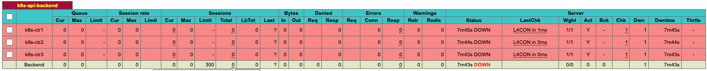

Kubespary HA & Upgrade
실습 환경 배포
가상머신 Spec : VM OS(Rocky Linux 10) → Virtualbox 7.2.4 과 Vagrant 2.4.9 버전 이상 필요
graph TD
subgraph External_Access [External Access & LB]
LB["**admin-lb**<br/>L4 LB in front of k8s-api<br/>(192.168.10.10)"]
end
subgraph K8S_Control_Plane [Control Plane - HA<br/>node에 kcm,scheduler 생략]
subgraph CTR1_Node [k8s-node1: 192.168.10.11]
API1["**kube-apiserver**"]
KUBELET_CTR1["kubelet"]
KPROXY_CTR1["kube-proxy"]
KUBELET_CTR1 -->|local connect| API1
KPROXY_CTR1 -->|svc/ep - watch/list| API1
end
subgraph CTR2_Node [k8s-node2: 192.168.10.12]
API2["**kube-apiserver**"]
KUBELET_CTR2["kubelet"]
KPROXY_CTR2["kube-proxy"]
KUBELET_CTR2 -->|local connect| API2
KPROXY_CTR2 -->|svc/ep - watch/list| API2
end
subgraph CTR3_Node [k8s-node3: 192.168.10.13]
API3["**kube-apiserver**"]
KUBELET_CTR3["kubelet"]
KPROXY_CTR3["kube-proxy"]
KUBELET_CTR3 -->|local connect| API3
KPROXY_CTR3 -->|svc/ep - watch/list| API3
end
end
subgraph K8S_Workers [Worker Nodes]
subgraph W1_Node [k8s-node4: 192.168.10.14]
KUBELET1["kubelet"]
KPROXY1["kube-proxy"]
NGX1["**nginx static pod<br/>(Client-Side LB)**"]
KUBELET1 -->|node mgmt| NGX1
KPROXY1 -->|local connect| NGX1
end
subgraph W2_Node [k8s-node5: 192.168.10.15]
KUBELET2["kubelet"]
KPROXY2["kube-proxy"]
NGX2["**nginx static pod<br/>(Client-Side LB)**"]
KUBELET2 -->|node mgmt| NGX2
KPROXY2 -->|local connect| NGX2
end
end
%% Connections
%% 1. LB에서 각 Control Plane의 API Server로 로드밸런싱
LB ==>|6443/TCP| API1
LB ==>|6443/TCP| API2
LB ==>|6443/TCP| API3
%% 2. Worker Node(kubelet/kube-proxy)에서 API Server로 연결 (일반적으로 LB 경유)
W1_Node -.->|Watch/Update| API1
W1_Node -.->|Watch/Update| API2
W1_Node -.->|Watch/Update| API3
W2_Node -.->|Watch/Update| API1
W2_Node -.->|Watch/Update| API2
W2_Node -.->|Watch/Update| API3
%% Styling
style LB fill:#f9f,stroke:#333,stroke-width:2px
style API1 fill:#fff9c4,stroke:#fbc02d
style API2 fill:#fff9c4,stroke:#fbc02d
style API3 fill:#fff9c4,stroke:#fbc02d
style KUBELET_CTR1 fill:#e3f2fd,stroke:#1e88e5
style KUBELET_CTR2 fill:#e3f2fd,stroke:#1e88e5
style KUBELET_CTR3 fill:#e3f2fd,stroke:#1e88e5
style KPROXY_CTR1 fill:#ede7f6,stroke:#5e35b1
style KPROXY_CTR2 fill:#ede7f6,stroke:#5e35b1
style KPROXY_CTR3 fill:#ede7f6,stroke:#5e35b1
style KUBELET1 fill:#e3f2fd,stroke:#1e88e5
style KUBELET2 fill:#e3f2fd,stroke:#1e88e5
style KPROXY1 fill:#ede7f6,stroke:#5e35b1
style KPROXY2 fill:#ede7f6,stroke:#5e35b1
style NGX1 fill:#c8e6c9,stroke:#388e3c
style NGX2 fill:#c8e6c9,stroke:#388e3c
style K8S_Control_Plane fill:#e1f5fe,stroke:#01579b
style K8S_Workers fill:#f1f8e9,stroke:#33691e
| NAME | Description | CPU | RAM | NIC1 | NIC2 | Init Script |
|---|---|---|---|---|---|---|
| admin-lb | kubespary 실행, API LB | 2 | 1GB | 10.0.2.15 | 192.168.10.10 | admin-lb.sh |
| k8s-node1 | K8S ControlPlane | 4 | 2GB | 10.0.2.15 | 192.168.10.11 | init-cfg.sh |
| k8s-node2 | K8S ControlPlane | 4 | 2GB | 10.0.2.15 | 192.168.10.12 | init-cfg.sh |
| k8s-node3 | K8S ControlPlane | 4 | 2GB | 10.0.2.15 | 192.168.10.13 | init-cfg.sh |
| k8s-node4 | K8S Worker | 4 | 2GB | 10.0.2.15 | 192.168.10.14 | init-cfg.sh |
| k8s-node5 | K8S Worker | 4 | 2GB | 10.0.2.15 | 192.168.10.15 | init-cfg.sh |
실습 환경 배포
Vagrantfile
# Base Image https://portal.cloud.hashicorp.com/vagrant/discover/bento/rockylinux-10.0 BOX_IMAGE = "bento/rockylinux-10.0" # "bento/rockylinux-9" BOX_VERSION = "202510.26.0" N = 5 # max number of Node Vagrant.configure("2") do |config| # Nodes (1..M).each do |i| config.vm.define "k8s-node#{i}" do |subconfig| subconfig.vm.box = BOX_IMAGE subconfig.vm.box_version = BOX_VERSION subconfig.vm.provider "virtualbox" do |vb| vb.customize ["modifyvm", :id, "--groups", "/Kubespary-Lab"] vb.customize ["modifyvm", :id, "--nicpromisc2", "allow-all"] vb.name = "k8s-node#{i}" vb.cpus = 4 vb.memory = 2048 vb.linked_clone = true end subconfig.vm.host_name = "k8s-node#{i}" subconfig.vm.network "private_network", ip: "192.168.10.1#{i}" subconfig.vm.network "forwarded_port", guest: 22, host: "6000#{i}", auto_correct: true, id: "ssh" subconfig.vm.synced_folder "./", "/vagrant", disabled: true subconfig.vm.provision "shell", path: "init_cfg.sh" end end # Admin & LoadBalancer Node config.vm.define "admin-lb" do |subconfig| subconfig.vm.box = BOX_IMAGE subconfig.vm.box_version = BOX_VERSION subconfig.vm.provider "virtualbox" do |vb| vb.customize ["modifyvm", :id, "--groups", "/Kubespary-Lab"] vb.customize ["modifyvm", :id, "--nicpromisc2", "allow-all"] vb.name = "admin-lb" vb.cpus = 2 vb.memory = 1024 vb.linked_clone = true end subconfig.vm.host_name = "admin-lb" subconfig.vm.network "private_network", ip: "192.168.10.10" subconfig.vm.network "forwarded_port", guest: 22, host: "60000", auto_correct: true, id: "ssh" subconfig.vm.synced_folder "./", "/vagrant", disabled: true subconfig.vm.provision "shell", path: "admin-lb.sh" end end
admin-lb.sh : HAProxy 설치/설정, NFS Server 설치/설정, ssh 설정, hosts 도메인 설정, kubespray git clone, kubectl/k9s/helm 설치 등
#!/usr/bin/env bash echo ">>>> Initial Config Start <<<<" echo "[TASK 1] Change Timezone and Enable NTP" timedatectl set-local-rtc 0 timedatectl set-timezone Asia/Seoul echo "[TASK 2] Disable firewalld and selinux" systemctl disable --now firewalld >/dev/null 2>&1 setenforce 0 sed -i 's/^SELINUX=enforcing/SELINUX=permissive/' /etc/selinux/config echo "[TASK 3] Setting Local DNS Using Hosts file" sed -i '/^127\.0\.\(1\|2\)\.1/d' /etc/hosts echo "192.168.10.10 k8s-api-srv.admin-lb.com admin-lb" >> /etc/hosts for (( i=1; i<=$1; i++ )); do echo "192.168.10.1$i k8s-node$i" >> /etc/hosts; done echo "[TASK 4] Delete default routing - enp0s9 NIC" # setenforce 0 설정 필요 nmcli connection modify enp0s9 ipv4.never-default yes nmcli connection up enp0s9 >/dev/null 2>&1 echo "[TASK 5] Install kubectl" cat << EOF > /etc/yum.repos.d/kubernetes.repo [kubernetes] name=Kubernetes baseurl=https://pkgs.k8s.io/core:/stable:/v1.32/rpm/ enabled=1 gpgcheck=1 gpgkey=https://pkgs.k8s.io/core:/stable:/v1.32/rpm/repodata/repomd.xml.key exclude=kubectl EOF dnf install -y -q kubectl --disableexcludes=kubernetes >/dev/null 2>&1 echo "[TASK 6] Install HAProxy" dnf install -y haproxy >/dev/null 2>&1 cat << EOF > /etc/haproxy/haproxy.cfg #--------------------------------------------------------------------- # Global settings #--------------------------------------------------------------------- global log 127.0.0.1 local2 chroot /var/lib/haproxy pidfile /var/run/haproxy.pid maxconn 4000 user haproxy group haproxy daemon # turn on stats unix socket stats socket /var/lib/haproxy/stats # utilize system-wide crypto-policies ssl-default-bind-ciphers PROFILE=SYSTEM ssl-default-server-ciphers PROFILE=SYSTEM #--------------------------------------------------------------------- # common defaults that all the 'listen' and 'backend' sections will # use if not designated in their block #--------------------------------------------------------------------- defaults mode http log global option httplog option tcplog option dontlognull option http-server-close #option forwardfor except 127.0.0.0/8 option redispatch retries 3 timeout http-request 10s timeout queue 1m timeout connect 10s timeout client 1m timeout server 1m timeout http-keep-alive 10s timeout check 10s maxconn 3000 # --------------------------------------------------------------------- # Kubernetes API Server Load Balancer Configuration # --------------------------------------------------------------------- frontend k8s-api bind *:6443 mode tcp option tcplog default_backend k8s-api-backend backend k8s-api-backend mode tcp option tcp-check option log-health-checks timeout client 3h timeout server 3h balance roundrobin server k8s-node1 192.168.10.11:6443 check check-ssl verify none inter 10000 server k8s-node2 192.168.10.12:6443 check check-ssl verify none inter 10000 server k8s-node3 192.168.10.13:6443 check check-ssl verify none inter 10000 # --------------------------------------------------------------------- # HAProxy Stats Dashboard - http://192.168.10.10:9000/haproxy_stats # --------------------------------------------------------------------- listen stats bind *:9000 mode http stats enable stats uri /haproxy_stats stats realm HAProxy\ Statistic stats admin if TRUE # --------------------------------------------------------------------- # Configure the Prometheus exporter - curl http://192.168.10.10:8405/metrics # --------------------------------------------------------------------- frontend prometheus bind *:8405 mode http http-request use-service prometheus-exporter if { path /metrics } no log EOF systemctl enable --now haproxy >/dev/null 2>&1 echo "[TASK 7] Install nfs-utils" dnf install -y nfs-utils >/dev/null 2>&1 systemctl enable --now nfs-server >/dev/null 2>&1 mkdir -p /srv/nfs/share chown nobody:nobody /srv/nfs/share chmod 755 /srv/nfs/share echo '/srv/nfs/share *(rw,async,no_root_squash,no_subtree_check)' > /etc/exports exportfs -rav echo "[TASK 8] Install packages" dnf install -y python3-pip git sshpass >/dev/null 2>&1 echo "[TASK 9] Setting SSHD" echo "root:qwe123" | chpasswd cat << EOF >> /etc/ssh/sshd_config PermitRootLogin yes PasswordAuthentication yes EOF systemctl restart sshd >/dev/null 2>&1 echo "[TASK 10] Setting SSH Key" ssh-keygen -t rsa -N "" -f /root/.ssh/id_rsa >/dev/null 2>&1 sshpass -p 'qwe123' ssh-copy-id -o StrictHostKeyChecking=no root@192.168.10.10 >/dev/null 2>&1 # cat /root/.ssh/authorized_keys for (( i=1; i<=$1; i++ )); do sshpass -p 'qwe123' ssh-copy-id -o StrictHostKeyChecking=no root@192.168.10.1$i >/dev/null 2>&1 ; done ssh -o StrictHostKeyChecking=no root@admin-lb hostname >/dev/null 2>&1 for (( i=1; i<=$1; i++ )); do sshpass -p 'qwe123' ssh -o StrictHostKeyChecking=no root@k8s-node$i hostname >/dev/null 2>&1 ; done echo "[TASK 11] Clone Kubespray Repository" git clone -b v2.29.1 https://github.com/kubernetes-sigs/kubespray.git /root/kubespray >/dev/null 2>&1 cp -rfp /root/kubespray/inventory/sample /root/kubespray/inventory/mycluster cat << EOF > /root/kubespray/inventory/mycluster/inventory.ini [kube_control_plane] k8s-node1 ansible_host=192.168.10.11 ip=192.168.10.11 etcd_member_name=etcd1 k8s-node2 ansible_host=192.168.10.12 ip=192.168.10.12 etcd_member_name=etcd2 k8s-node3 ansible_host=192.168.10.13 ip=192.168.10.13 etcd_member_name=etcd3 [etcd:children] kube_control_plane [kube_node] k8s-node4 ansible_host=192.168.10.14 ip=192.168.10.14 #k8s-node5 ansible_host=192.168.10.15 ip=192.168.10.15 EOF echo "[TASK 12] Install Python Dependencies" pip3 install -r /root/kubespray/requirements.txt >/dev/null 2>&1 # pip3 list echo "[TASK 13] Install K9s" CLI_ARCH=amd64 if [ "$(uname -m)" = "aarch64" ]; then CLI_ARCH=arm64; fi wget -P /tmp https://github.com/derailed/k9s/releases/latest/download/k9s_linux_${CLI_ARCH}.tar.gz >/dev/null 2>&1 tar -xzf /tmp/k9s_linux_${CLI_ARCH}.tar.gz -C /tmp chown root:root /tmp/k9s mv /tmp/k9s /usr/local/bin/ chmod +x /usr/local/bin/k9s echo "[TASK 14] Install kubecolor" dnf install -y -q 'dnf-command(config-manager)' >/dev/null 2>&1 dnf config-manager --add-repo https://kubecolor.github.io/packages/rpm/kubecolor.repo >/dev/null 2>&1 dnf install -y -q kubecolor >/dev/null 2>&1 echo "[TASK 15] Install Helm" curl -fsSL https://raw.githubusercontent.com/helm/helm/main/scripts/get-helm-3 | DESIRED_VERSION=v3.18.6 bash >/dev/null 2>&1 echo "[TASK 16] ETC" echo "sudo su -" >> /home/vagrant/.bashrc echo ">>>> Initial Config End <<<<"
init_cfg.sh : ssh 설정, hosts 도메인 설정 등
#!/usr/bin/env bash echo ">>>> Initial Config Start <<<<" echo "[TASK 1] Change Timezone and Enable NTP" timedatectl set-local-rtc 0 timedatectl set-timezone Asia/Seoul echo "[TASK 2] Disable firewalld and selinux" systemctl disable --now firewalld >/dev/null 2>&1 setenforce 0 sed -i 's/^SELINUX=enforcing/SELINUX=permissive/' /etc/selinux/config echo "[TASK 3] Disable and turn off SWAP & Delete swap partitions" swapoff -a sed -i '/swap/d' /etc/fstab sfdisk --delete /dev/sda 2 >/dev/null 2>&1 partprobe /dev/sda >/dev/null 2>&1 echo "[TASK 4] Config kernel & module" cat << EOF > /etc/modules-load.d/k8s.conf overlay br_netfilter EOF modprobe overlay >/dev/null 2>&1 modprobe br_netfilter >/dev/null 2>&1 cat << EOF >/etc/sysctl.d/k8s.conf net.bridge.bridge-nf-call-iptables = 1 net.bridge.bridge-nf-call-ip6tables = 1 net.ipv4.ip_forward = 1 EOF sysctl --system >/dev/null 2>&1 echo "[TASK 5] Setting Local DNS Using Hosts file" sed -i '/^127\.0\.\(1\|2\)\.1/d' /etc/hosts echo "192.168.10.10 k8s-api-srv.admin-lb.com admin-lb" >> /etc/hosts for (( i=1; i<=$1; i++ )); do echo "192.168.10.1$i k8s-node$i" >> /etc/hosts; done echo "[TASK 6] Delete default routing - enp0s9 NIC" # setenforce 0 설정 필요 nmcli connection modify enp0s9 ipv4.never-default yes nmcli connection up enp0s9 >/dev/null 2>&1 echo "[TASK 7] Setting SSHD" echo "root:qwe123" | chpasswd cat << EOF >> /etc/ssh/sshd_config PermitRootLogin yes PasswordAuthentication yes EOF systemctl restart sshd >/dev/null 2>&1 echo "[TASK 8] Install packages" dnf install -y git nfs-utils >/dev/null 2>&1 echo "[TASK 9] ETC" echo "sudo su -" >> /home/vagrant/.bashrc echo ">>>> Initial Config End <<<<"
실습 환경 배포 수행
# 실습용 디렉터리 생성 mkdir k8s-ha-kubespary cd k8s-ha-kubespary # 파일 다운로드 curl -O https://raw.githubusercontent.com/gasida/vagrant-lab/refs/heads/main/k8s-ha-kubespary/Vagrantfile curl -O https://raw.githubusercontent.com/gasida/vagrant-lab/refs/heads/main/k8s-ha-kubespary/admin-lb.sh curl -O https://raw.githubusercontent.com/gasida/vagrant-lab/refs/heads/main/k8s-ha-kubespary/init_cfg.sh # 실습 환경 배포 vagrant up vagrant status
vagrant ssh admin-lb기본 정보 확인# 관리 대상 노드 통신 확인 cat /etc/hosts for i in {0..5}; do echo ">> k8s-node$i <<"; ssh 192.168.10.1$i hostname; echo; done for i in {1..5}; do echo ">> k8s-node$i <<"; ssh k8s-node$i hostname; echo; done # 파이썬 버전 정보 확인 python -V && pip -V # kubespary 작업 디렉터리 및 파일 확인 tree /root/kubespray/ -L 2 cd /root/kubespray/ cat ansible.cfg cat /root/kubespray/inventory/mycluster/inventory.ini # NFS Server 정보 확인 systemctl status nfs-server --no-pager tree /srv/nfs/share/ exportfs -rav exporting *:/srv/nfs/share cat /etc/exports /srv/nfs/share *(rw,async,no_root_squash,no_subtree_check) # admin-lb IP에 TCP 6443 호출(인입)시, 백엔드 대상인 k8s-node1~3에 각각 분산 전달 설정 확인 cat /etc/haproxy/haproxy.cfg ... # --------------------------------------------------------------------- # Kubernetes API Server Load Balancer Configuration # --------------------------------------------------------------------- frontend k8s-api bind *:6443 mode tcp option tcplog default_backend k8s-api-backend backend k8s-api-backend mode tcp option tcp-check option log-health-checks timeout client 3h timeout server 3h balance roundrobin server k8s-node1 192.168.10.11:6443 check check-ssl verify none inter 10000 server k8s-node2 192.168.10.12:6443 check check-ssl verify none inter 10000 server k8s-node3 192.168.10.13:6443 check check-ssl verify none inter 10000 # HAProxy 상태 확인 systemctl status haproxy.service --no-pager journalctl -u haproxy.service --no-pager ss -tnlp | grep haproxy LISTEN 0 3000 0.0.0.0:6443 0.0.0.0:* users:(("haproxy",pid=4915,fd=7)) # k8s api loadbalancer LISTEN 0 3000 0.0.0.0:9000 0.0.0.0:* users:(("haproxy",pid=4915,fd=8)) # haproxy stat dashbaord LISTEN 0 3000 0.0.0.0:8405 0.0.0.0:* users:(("haproxy",pid=4915,fd=9)) # metrics exporter # 통계 페이지 접속 open http://192.168.10.10:9000/haproxy_stats # (참고) 프로테우스 메트릭 엔드포인트 접속 curl http://192.168.10.10:8405/metrics
http://192.168.10.10:9000/haproxy_stats 현재 ‘HAProxy 통계 페이지’에 backend 대상 서버는 모두 DOWN 상태.
(Worker Client-Side LoadBalancing) Kubespary 를 통한 k8s 배포 (
8분정도 소요)# 작업용 inventory 디렉터리 확인 cd /root/kubespray/ git describe --tags git --no-pager tag ... v2.29.1 v2.3.0 v2.30.0 ... tree inventory/mycluster/ ... # inventory.ini 확인 cat /root/kubespray/inventory/mycluster/inventory.ini [kube_control_plane] k8s-node1 ansible_host=192.168.10.11 ip=192.168.10.11 etcd_member_name=etcd1 k8s-node2 ansible_host=192.168.10.12 ip=192.168.10.12 etcd_member_name=etcd2 k8s-node3 ansible_host=192.168.10.13 ip=192.168.10.13 etcd_member_name=etcd3 [etcd:children] kube_control_plane [kube_node] k8s-node4 ansible_host=192.168.10.14 ip=192.168.10.14 #k8s-node5 ansible_host=192.168.10.15 ip=192.168.10.15 # 아래 hostvars 에 선언 적용된 값 찾기는 아래 코드 블록 참고 ansible-inventory -i /root/kubespray/inventory/mycluster/inventory.ini --list "hostvars": { "k8s-node1": { "allow_unsupported_distribution_setup": false, "ansible_host": "192.168.10.11", # 해당 값은 바로 위 인벤토리에 host에 직접 선언 "bin_dir": "/usr/local/bin", ... ansible-inventory -i /root/kubespray/inventory/mycluster/inventory.ini --graph @all: |--@ungrouped: |--@etcd: | |--@kube_control_plane: | | |--k8s-node1 | | |--k8s-node2 | | |--k8s-node3 |--@kube_node: | |--k8s-node4 # k8s_cluster.yml # for every node in the cluster (not etcd when it's separate) sed -i 's|kube_owner: kube|kube_owner: root|g' inventory/mycluster/group_vars/k8s_cluster/k8s-cluster.yml sed -i 's|kube_network_plugin: calico|kube_network_plugin: flannel|g' inventory/mycluster/group_vars/k8s_cluster/k8s-cluster.yml sed -i 's|kube_proxy_mode: ipvs|kube_proxy_mode: iptables|g' inventory/mycluster/group_vars/k8s_cluster/k8s-cluster.yml sed -i 's|enable_nodelocaldns: true|enable_nodelocaldns: false|g' inventory/mycluster/group_vars/k8s_cluster/k8s-cluster.yml grep -iE 'kube_owner|kube_network_plugin:|kube_proxy_mode|enable_nodelocaldns:' inventory/mycluster/group_vars/k8s_cluster/k8s-cluster.yml kube_owner: root kube_network_plugin: flannel kube_proxy_mode: iptables enable_nodelocaldns: false ## coredns autoscaler 미설치 echo "enable_dns_autoscaler: false" >> inventory/mycluster/group_vars/k8s_cluster/k8s-cluster.yml # flannel 설정 수정 echo "flannel_interface: enp0s9" >> inventory/mycluster/group_vars/k8s_cluster/k8s-net-flannel.yml grep "^[^#]" inventory/mycluster/group_vars/k8s_cluster/k8s-net-flannel.yml # addons sed -i 's|metrics_server_enabled: false|metrics_server_enabled: true|g' inventory/mycluster/group_vars/k8s_cluster/addons.yml grep -iE 'metrics_server_enabled:' inventory/mycluster/group_vars/k8s_cluster/addons.yml ## cat roles/kubernetes-apps/metrics_server/defaults/main.yml # 메트릭서버 관련 디폴트 변수 참고 ## cat roles/kubernetes-apps/metrics_server/templates/metrics-server-deployment.yaml.j2 # jinja2 템플릿 파일 참고 echo "metrics_server_requests_cpu: 25m" >> inventory/mycluster/group_vars/k8s_cluster/addons.yml echo "metrics_server_requests_memory: 16Mi" >> inventory/mycluster/group_vars/k8s_cluster/addons.yml # 지원 버전 정보 확인 cat roles/kubespray_defaults/vars/main/checksums.yml | grep -i kube -A40 # 배포: 아래처럼 반드시 ~/kubespray 디렉토리에서 ansible-playbook 를 실행하자! 8분 정도 소요 ansible-playbook -i inventory/mycluster/inventory.ini -v cluster.yml --list-tasks # 배포 전, Task 목록 확인 ANSIBLE_FORCE_COLOR=true ansible-playbook -i inventory/mycluster/inventory.ini -v cluster.yml -e kube_version="1.32.9" | tee kubespray_install.log # 설치 확인 more kubespray_install.log # facts 수집 정보 확인 tree /tmp ├── k8s-node1 ├── k8s-node2 ├── k8s-node3 ... # local_release_dir: "/tmp/releases" 확인 ssh k8s-node1 tree /tmp/releases ssh k8s-node4 tree /tmp/releases # sysctl 적용값 확인 ssh k8s-node1 grep "^[^#]" /etc/sysctl.conf ssh k8s-node4 grep "^[^#]" /etc/sysctl.conf # etcd 백업 확인 for i in {1..3}; do echo ">> k8s-node$i <<"; ssh k8s-node$i tree /var/backups; echo; done # k8s api 호출 확인 : IP, Domain cat /etc/hosts for i in {1..3}; do echo ">> k8s-node$i <<"; curl -sk https://192.168.10.1$i:6443/version | grep Version; echo; done for i in {1..3}; do echo ">> k8s-node$i <<"; curl -sk https://k8s-node$i:6443/version | grep Version; echo; done # k8s admin 자격증명 확인 : 컨트롤 플레인 노드들은 apiserver 파드가 배치되어 있으니 127.0.0.1:6443 엔드포인트 설정됨 for i in {1..3}; do echo ">> k8s-node$i <<"; ssh k8s-node$i kubectl cluster-info -v=6; echo; done >> k8s-node1 << I0206 23:33:26.343187 26772 loader.go:402] Config loaded from file: /root/.kube/config ... Kubernetes control plane is running at https://127.0.0.1:6443 mkdir /root/.kube scp k8s-node1:/root/.kube/config /root/.kube/ cat /root/.kube/config | grep server # API Server 주소를 localhost에서 컨트롤 플레인 1번 node P로 변경 : 1번 node 장애 시, 직접 수동으로 다른 node IP 변경 필요. kubectl get node -owide -v=6 sed -i 's/127.0.0.1/192.168.10.11/g' /root/.kube/config 혹은 sed -i 's/127.0.0.1/192.168.10.12/g' /root/.kube/config sed -i 's/127.0.0.1/192.168.10.13/g' /root/.kube/config kubectl get node -owide -v=6 I0206 23:36:15.845703 13996 loader.go:402] Config loaded from file: /root/.kube/config...NAME STATUS ROLES AGE VERSION INTERNAL-IP EXTERNAL-IP OS-IMAGE KERNEL-VERSION CONTAINER-RUNTIME k8s-node1 Ready control-plane 7m31s v1.32.9 192.168.10.11 <none> Rocky Linux 10.0 (Red Quartz) 6.12.0-55.39.1.el10_0.aarch64 containerd://2.1.5 k8s-node2 Ready control-plane 7m19s v1.32.9 192.168.10.12 <none> Rocky Linux 10.0 (Red Quartz) 6.12.0-55.39.1.el10_0.aarch64 containerd://2.1.5 k8s-node3 Ready control-plane 7m17s v1.32.9 192.168.10.13 <none> Rocky Linux 10.0 (Red Quartz) 6.12.0-55.39.1.el10_0.aarch64 containerd://2.1.5 k8s-node4 Ready <none> 6m54s v1.32.9 192.168.10.14 <none> Rocky Linux 10.0 (Red Quartz) 6.12.0-55.39.1.el10_0.aarch64 containerd://2.1.5 # [kube_control_plane] 과 [kube_node] 포함 노드 비교 ansible-inventory -i /root/kubespray/inventory/mycluster/inventory.ini --graph @all: |--@ungrouped: |--@etcd: | |--@kube_control_plane: | | |--k8s-node1 | | |--k8s-node2 | | |--k8s-node3 |--@kube_node: | |--k8s-node4 kubectl describe node | grep -E 'Name:|Taints' Name: k8s-node1 Taints: node-role.kubernetes.io/control-plane:NoSchedule Name: k8s-node2 Taints: node-role.kubernetes.io/control-plane:NoSchedule Name: k8s-node3 Taints: node-role.kubernetes.io/control-plane:NoSchedule Name: k8s-node4 Taints: <none> kubectl get pod -A ... # 노드별 파드 CIDR 확인 kubectl get nodes -o jsonpath='{range .items[*]}{.metadata.name}{"\t"}{.spec.podCIDR}{"\n"}{end}' k8s-node1 10.233.64.0/24 k8s-node2 10.233.65.0/24 k8s-node3 10.233.66.0/24 k8s-node4 10.233.67.0/24 # etcd 정보 확인 : etcd name 확인 ssh k8s-node1 etcdctl.sh member list -w table +------------------+---------+-------+----------------------------+----------------------------+------------+ | ID | STATUS | NAME | PEER ADDRS | CLIENT ADDRS | IS LEARNER | +------------------+---------+-------+----------------------------+----------------------------+------------+ | 8b0ca30665374b0 | started | etcd3 | https://192.168.10.13:2380 | https://192.168.10.13:2379 | false | | 2106626b12a4099f | started | etcd2 | https://192.168.10.12:2380 | https://192.168.10.12:2379 | false | | c6702130d82d740f | started | etcd1 | https://192.168.10.11:2380 | https://192.168.10.11:2379 | false | +------------------+---------+-------+----------------------------+----------------------------+------------+ for i in {1..3}; do echo ">> k8s-node$i <<"; ssh k8s-node$i etcdctl.sh endpoint status -w table; echo; done >> k8s-node1 << +----------------+------------------+---------+---------+-----------+------------+-----------+------------+--------------------+--------+ | ENDPOINT | ID | VERSION | DB SIZE | IS LEADER | IS LEARNER | RAFT TERM | RAFT INDEX | RAFT APPLIED INDEX | ERRORS | +----------------+------------------+---------+---------+-----------+------------+-----------+------------+--------------------+--------+ | 127.0.0.1:2379 | c6702130d82d740f | 3.5.25 | 5.2 MB | true | false | 4 | 2546 | 2546 | | +----------------+------------------+---------+---------+-----------+------------+-----------+------------+--------------------+--------+ ... # k9s 실행 k9s # 자동완성 및 단축키 설정 source <(kubectl completion bash) alias k=kubectl alias kc=kubecolor complete -F __start_kubectl k echo 'source <(kubectl completion bash)' >> /etc/profile echo 'alias k=kubectl' >> /etc/profile echo 'alias kc=kubecolor' >> /etc/profile echo 'complete -F __start_kubectl k' >> /etc/profile
Kubespray 변수 우선순위 구조 및 검색
- Ansible variable precedence : 숫자가 높을수록 우선순위가 높음 - Ansible_Docs
- Command-line values (for example,
u my_user, these are not variables)
- Role defaults (as defined in Role directory structure) 1
- Inventory file or script group vars 2
- Inventory group_vars/all 3
- Playbook group_vars/all 3
- Inventory group_vars/* 3
- Playbook group_vars/* 3
- Inventory file or script host vars 2
- Inventory host_vars/* 3
- Playbook host_vars/* 3
- Host facts and cached set_facts 4
- Play vars
- Play vars_prompt
- Play vars_files
- Role vars (as defined in Role directory structure)
- Block vars (for tasks in block only)
- Task vars (for the task only)
- include_vars
- Registered vars and set_facts
- Role (and include_role) params
- include params
- Extra vars (for example,
e "user=my_user")(always win precedence)
- Command-line values (for example,
# 예시) 특정 변수 선언 및 사용 검색 grep -Rn "allow_unsupported_distribution_setup" inventory/mycluster/ playbooks/ roles/ -A1 -B1 inventory/mycluster/group_vars/all/all.yml-141-## If enabled it will allow kubespray to attempt setup even if the distribution is not supported. For unsupported distributions this can lead to unexpected failures in some cases. inventory/mycluster/group_vars/all/all.yml:142:allow_unsupported_distribution_setup: false -- roles/kubernetes/preinstall/tasks/0040-verify-settings.yml-22- assert: roles/kubernetes/preinstall/tasks/0040-verify-settings.yml:23: that: (allow_unsupported_distribution_setup | default(false)) or ansible_distribution in supported_os_distributions roles/kubernetes/preinstall/tasks/0040-verify-settings.yml-24- msg: "{{ ansible_distribution }} is not a known OS" # Kubespray 변수 우선순위 구조 (Override Flow) [ 낮은 우선순위 ] ┌─────────────────────────────────────────────┐ │ roles/*/defaults/main.yml │ ← Kubespray role 기본값 │ (예: bin_dir, kube_version 기본값) │ └─────────────────────────────────────────────┘ ⬇ override ┌─────────────────────────────────────────────┐ │ roles/*/vars/main.yml │ ← role 내부 강제 변수 (웬만해선 안 건드림) └─────────────────────────────────────────────┘ ⬇ override ┌─────────────────────────────────────────────┐ │ inventory/mycluster/group_vars/all/*.yml │ ← 전체 노드 공통 설정 # 99% 여기서 조절 │ inventory/mycluster/group_vars/k8s_cluster/*.yml │ inventory/mycluster/group_vars/etcd.yml │ └─────────────────────────────────────────────┘ ⬇ override ┌─────────────────────────────────────────────┐ │ inventory/mycluster/host_vars/<node>.yml │ ← 특정 노드에만 적용 # 특정 노드만 다르게 쓸 때 └─────────────────────────────────────────────┘ ⬇ override ┌─────────────────────────────────────────────┐ │ playbook vars (vars:, vars_files:) │ ← reset.yml / cluster.yml 내부 vars # 실행하는 플레이북에 선언된 경우 └─────────────────────────────────────────────┘ ⬇ override ┌─────────────────────────────────────────────┐ │ --extra-vars (-e) │ ← CLI에서 준 값 (최강자) │ ex) -e kube_version=v1.29.3 │ └─────────────────────────────────────────────┘ [ 높은 우선순위 ] # 전체 노드 공통 설정(예시) : 99% 여기서 조절 inventory/mycluster/group_vars/k8s_cluster/k8s-cluster.yml kube_version: v1.29.3 kube_network_plugin: cilium # 특정 노드에만 적용(예시) : 특정 노드만 다르게 쓸 때 inventory/mycluster/host_vars/k8s-ctr1.yml node_labels: node-role.kubernetes.io/control-plane: "true" # 실행하는 플레이북에 선언된 경우(예) : 아래 경우 플레이북을 import 할 때만 적용되는 “로컬 변수 override” cat playbooks/scale.yml | grep 'Install etcd' -A5 - name: Install etcd vars: # inventory/group_vars 보다 우선순위가 높음, 이 playbook import 범위 안에서만 유효 etcd_cluster_setup: false # etcd 신규 클러스터 bootstrap 로직 비활성화 etcd_events_cluster_setup: false # 이벤트 전용 etcd 클러스터 구성 안 함 import_playbook: install_etcd.yml # install_etcd.yml이라는 별도의 플레이북 파일을 현재 위치에 포함시켜 실행하라는 명령 # 예시) dns autoscaler 미설치 하기 위해 검색 grep -Rni "autoscaler" inventory/mycluster/ playbooks/ roles/ -A2 -B1 grep -Rni "autoscaler" inventory/mycluster/ playbooks/ roles/ --include="*.yml" -A2 -B1 roles/kubespray_defaults/defaults/main/main.yml:130:# Enable dns autoscaler roles/kubespray_defaults/defaults/main/main.yml:131:enable_dns_autoscaler: true ...- Ansible variable precedence : 숫자가 높을수록 우선순위가 높음 - Ansible_Docs

control 컴포넌트 확인
# kube-apiserver 정보 확인 ssh k8s-node1 cat /etc/kubernetes/manifests/kube-apiserver.yaml ... spec: containers: - command: - kube-apiserver - --advertise-address=192.168.10.11 ... - --apiserver-count=3 - --authorization-mode=Node,RBAC - '--bind-address=::' ... - --etcd-servers=https://192.168.10.11:2379,https://192.168.10.12:2379,https://192.168.10.13:2379 # kubeadm 직접 설치 시 정보와 비교 : --etcd-servers=https://127.0.0.1:2379 # (참고) lease 정보 확인 : apiserver 는 모두 Active 동작, kcm / scheduler 은 1대만 리더 역할 kubectl get lease -n kube-system NAME HOLDER AGE apiserver-3jsrenrspxlfjr2cvxzde6qwdi apiserver-3jsrenrspxlfjr2cvxzde6qwdi_6f2159c8-a107-433f-97a1-af4ddcb11c6b 9m59s apiserver-syplgv2uz3ssgciixtnxs4xeza apiserver-syplgv2uz3ssgciixtnxs4xeza_2c5c5be9-68c4-4743-aa69-d1bb40c58be2 9m44s apiserver-z2kpjb5k5ch6lznxmv3gnpujmy apiserver-z2kpjb5k5ch6lznxmv3gnpujmy_d85d659a-0fa2-4296-8d02-e35bad5aa4f8 9m46s kube-controller-manager k8s-node3_bc458e54-cad7-41c7-800e-f496f95460d8 9m55s kube-scheduler k8s-node3_2f215e1d-80ec-422b-966c-f4f9fc15c80f 9m55s # kube-controller-manager 정보 확인 : 'bind-address=::' IPv6/IPv4 지원 ssh k8s-node1 cat /etc/kubernetes/manifests/kube-controller-manager.yaml - --allocate-node-cidrs=true - --cluster-cidr=10.233.64.0/18 - --node-cidr-mask-size-ipv4=24 - --service-cluster-ip-range=10.233.0.0/18 - '--bind-address=::' - --leader-elect=true # kube-scheduler 정보 확인 ssh k8s-node1 cat /etc/kubernetes/manifests/kube-scheduler.yaml - '--bind-address=::' - --leader-elect=true # 인증서 정보 확인 : ctrl1번 노드만 super-admin.conf 확인 for i in {1..3}; do echo ">> k8s-node$i <<"; ssh k8s-node$i ls -l /etc/kubernetes/super-admin.conf ; echo; done >> k8s-node1 << -rw-------. 1 root root 5693 Feb 6 23:28 /etc/kubernetes/super-admin.conf >> k8s-node2 << ls: cannot access '/etc/kubernetes/super-admin.conf': No such file or directory >> k8s-node3 << ls: cannot access '/etc/kubernetes/super-admin.conf': No such file or directory ## 보통 coredns 는 service cide 의 10번째 ip를 사용. 하지만 kubespary 경우 보통 3번째 ip를 사용. for i in {1..3}; do echo ">> k8s-node$i <<"; ssh k8s-node$i kubeadm certs check-expiration ; echo; done >> k8s-node1 << W0206 23:39:31.372245 28500 utils.go:69] The recommended value for "clusterDNS" in "KubeletConfiguration" is: [10.233.0.10]; the provided value is: [10.233.0.3] CERTIFICATE EXPIRES RESIDUAL TIME CERTIFICATE AUTHORITY EXTERNALLY MANAGED admin.conf Feb 06, 2027 14:28 UTC 364d ca no apiserver Feb 06, 2027 14:28 UTC 364d ca no apiserver-kubelet-client Feb 06, 2027 14:28 UTC 364d ca no controller-manager.conf Feb 06, 2027 14:28 UTC 364d ca no front-proxy-client Feb 06, 2027 14:28 UTC 364d front-proxy-ca no scheduler.conf Feb 06, 2027 14:28 UTC 364d ca no super-admin.conf Feb 06, 2027 14:28 UTC 364d ca no ... >> k8s-node3 << ... W0206 23:39:31.888846 27748 utils.go:69] The recommended value for "clusterDNS" in "KubeletConfiguration" is: [10.233.0.10]; the provided value is: [10.233.0.3] CERTIFICATE EXPIRES RESIDUAL TIME CERTIFICATE AUTHORITY EXTERNALLY MANAGED admin.conf Feb 06, 2027 14:28 UTC 364d ca no apiserver Feb 06, 2027 14:28 UTC 364d ca no apiserver-kubelet-client Feb 06, 2027 14:28 UTC 364d ca no controller-manager.conf Feb 06, 2027 14:28 UTC 364d ca no front-proxy-client Feb 06, 2027 14:28 UTC 364d front-proxy-ca no scheduler.conf Feb 06, 2027 14:28 UTC 364d ca no !MISSING! super-admin.conf ... !MISSING! super-admin.conf # ctrl1번 노드만 super-admin.conf 확인 # 파드에 coredns service (Cluster) IP 확인 kubectl exec -it -n kube-system nginx-proxy-k8s-node4 -- cat /etc/resolv.conf search kube-system.svc.cluster.local svc.cluster.local cluster.local default.svc.cluster.local nameserver 10.233.0.3 options ndots:5 # kubespray는 coredns의 서비스명이 kube-dns가 아니라 coredns이며, clusterIP 가 10.233.0.3 kubectl get svc -n kube-system coredns NAME TYPE CLUSTER-IP EXTERNAL-IP PORT(S) AGE coredns ClusterIP 10.233.0.3 <none> 53/UDP,53/TCP,9153/TCP 5h34m kubectl get cm -n kube-system kubelet-config -o yaml | grep clusterDNS -A2 clusterDNS: - 10.233.0.3 clusterDomain: cluster.local # (참고) kubeadm 통한 직접 설정 시 : 10.96.0.0/16 대역 중 10번째 IP 사용 확인 kubectl get svc,ep -n kube-system NAME TYPE CLUSTER-IP EXTERNAL-IP PORT(S) AGE service/kube-dns ClusterIP 10.96.0.10 <none> 53/UDP,53/TCP,9153/TCP 4h50m ... # kubespray task에 의해서 호스트에서도 서비스명 도메인 질의를 위해 ns 최상단 추가 등 확인 ssh k8s-node1 cat /etc/resolv.conf # Generated by NetworkManager search default.svc.cluster.local svc.cluster.local nameserver 10.233.0.3 nameserver 168.126.63.1 nameserver 8.8.8.8 options ndots:2 timeout:2 attempts:2 ## 현재 k8s join 되지 않는 노드는 기본 dns 설정 상태 ssh k8s-node5 cat /etc/resolv.conf # Generated by NetworkManager nameserver 168.126.63.1 nameserver 8.8.8.8 # kubeadm-config cm 정보 확인 kubectl get cm -n kube-system kubeadm-config -o yaml ... apiVersion: kubeadm.k8s.io/v1beta4 caCertificateValidityPeriod: 87600h0m0s certificateValidityPeriod: 8760h0m0s certificatesDir: /etc/kubernetes/ssl clusterName: cluster.local controlPlaneEndpoint: 192.168.10.11:6443 # << ctrl2~3은?? ... etcd: external: # kubeadm 이 파드로 배포한것이 아니며 systemd unit 구성. caFile: /etc/ssl/etcd/ssl/ca.pem certFile: /etc/ssl/etcd/ssl/node-k8s-node1.pem endpoints: - https://192.168.10.11:2379 - https://192.168.10.12:2379 - https://192.168.10.13:2379 keyFile: /etc/ssl/etcd/ssl/node-k8s-node1-key.pem imageRepository: registry.k8s.io kind: ClusterConfiguration kubernetesVersion: v1.32.9 networking: dnsDomain: cluster.local podSubnet: 10.233.64.0/18 serviceSubnet: 10.233.0.0/18 ... # kubeadm 과 동일하게 kubelet node 최초 join 시 CSR 사용 확인 kubectl get csr NAME AGE SIGNERNAME REQUESTOR REQUESTEDDURATION CONDITION csr-7rv5h 13m kubernetes.io/kube-apiserver-client-kubelet system:bootstrap:9egf4o <none> Approved,Issued csr-rkppp 14m kubernetes.io/kube-apiserver-client-kubelet system:node:k8s-node1 <none> Approved,Issued csr-rqzwn 13m kubernetes.io/kube-apiserver-client-kubelet system:bootstrap:sai6gc <none> Approved,Issued csr-wq8l8 13m kubernetes.io/kube-apiserver-client-kubelet system:bootstrap:5j7f7l <none> Approved,Issued
K8S API 엔드포인트
- [Case0] 단일 컨트플 플레인 노드 1대 + 워커 노드 1대 : Skip
- [Case1] HA 컨트플 플레인 노드(3대) + (Worker Client-Side LoadBalancing) - Docs
워커노드 컴포넌트 → k8s api endpoint 분석
# worker(kubeclt, kube-proxy) -> k8s api # 워커노드에서 정보 확인 ssh k8s-node4 crictl ps CONTAINER IMAGE CREATED STATE NAME ATTEMPT POD ID POD NAMESPACE c3de9951ce7bf 5a91d90f47ddf 44 minutes ago Running nginx-proxy 0 5c3caf793f513 nginx-proxy-k8s-node4 kube-system... ssh k8s-node4 cat /etc/nginx/nginx.conf error_log stderr notice; worker_processes 2; worker_rlimit_nofile 130048; worker_shutdown_timeout 10s; ... stream { upstream kube_apiserver { least_conn; server 192.168.10.11:6443; server 192.168.10.12:6443; server 192.168.10.13:6443; } server { listen 127.0.0.1:6443; proxy_pass kube_apiserver; proxy_timeout 10m; proxy_connect_timeout 1s; } } http { ... server { listen 8081; location /healthz { access_log off; return 200; ... ssh k8s-node4 curl -s localhost:8081/healthz -I HTTP/1.1 200 OK Server: nginx # 워커노드에서 -> Client-Side LB를 사용해서 k8s api 호출 시도 ssh k8s-node4 curl -sk https://127.0.0.1:6443/version | grep Version "gitVersion": "v1.32.9", "goVersion": "go1.23.12", ssh k8s-node4 ss -tnlp | grep nginx LISTEN 0 511 127.0.0.1:6443 0.0.0.0:* users:(("nginx",pid=15096,fd=5),("nginx",pid=15095,fd=5),("nginx",pid=15069,fd=5)) LISTEN 0 511 0.0.0.0:8081 0.0.0.0:* users:(("nginx",pid=15096,fd=6),("nginx",pid=15095,fd=6),("nginx",pid=15069,fd=6)) # kubelet(client) -> api-server 호출 시 엔드포인트 정보 확인 : https://localhost:6443 ssh k8s-node4 cat /etc/kubernetes/kubelet.conf ssh k8s-node4 cat /etc/kubernetes/kubelet.conf | grep server server: https://localhost:6443 # kube-proxy(client) -> api-server 호출 시 엔드포인트 정보 확인 kc get cm -n kube-system kube-proxy -o yaml kubectl get cm -n kube-system kube-proxy -o yaml | grep 'kubeconfig.conf:' -A18 kubeconfig.conf: |- apiVersion: v1 kind: Config clusters: - cluster: certificate-authority: /var/run/secrets/kubernetes.io/serviceaccount/ca.crt server: https://127.0.0.1:6443 name: default ... # nginx.conf 생성 Task tree roles/kubernetes/node/tasks/loadbalancer cat roles/kubernetes/node/tasks/loadbalancer/nginx-proxy.yml ... - name: Nginx-proxy | Write nginx-proxy configuration template: src: "loadbalancer/nginx.conf.j2" dest: "{{ nginx_config_dir }}/nginx.conf" owner: root mode: "0755" backup: true # nginx.conf jinja2 템플릿 파일 cat roles/kubernetes/node/templates/loadbalancer/nginx.conf.j2 error_log stderr notice; worker_processes 2; worker_rlimit_nofile 130048; worker_shutdown_timeout 10s; events { multi_accept on; use epoll; worker_connections 16384; } stream { upstream kube_apiserver { least_conn; # RoundRobin 이 아닌 Lease_conn이 기본 설정인 이유는? {% for host in groups['kube_control_plane'] -%} server {{ hostvars[host]['main_access_ip'] | ansible.utils.ipwrap }}:{{ kube_apiserver_port }}; {% endfor -%} } server { listen 127.0.0.1:{{ loadbalancer_apiserver_port|default(kube_apiserver_port) }}; {% if ipv6_stack -%} listen [::1]:{{ loadbalancer_apiserver_port|default(kube_apiserver_port) }}; {% endif -%} proxy_pass kube_apiserver; proxy_timeout 10m; proxy_connect_timeout 1s; } } # nginx static pod 매니페스트 파일 확인 cat roles/kubernetes/node/templates/manifests/nginx-proxy.manifest.j2 apiVersion: v1 kind: Pod metadata: name: {{ loadbalancer_apiserver_pod_name }} namespace: kube-system labels: addonmanager.kubernetes.io/mode: Reconcile k8s-app: kube-nginx annotations: nginx-cfg-checksum: "{{ nginx_stat.stat.checksum }}" ...
- 결론 : 워커노드에서 k8s apiserver 를 부하분산 호출을 위해서는 Client-Side LB를 사용! → 그럼 컨트롤 플레인에서는?
- kubespary 지원 Client-Side LB : nginx, haproxy, kube-vip - Github
(참고) nginx log 중 alert 해결 :
--tags "containerd"사용 - Tags# nginx proxy 파드 로그 확인 kubectl logs -n kube-system nginx-proxy-k8s-node4 ... 2026/01/28 04:02:40 [notice] 1#1: getrlimit(RLIMIT_NOFILE): 65535:65535 2026/01/28 04:02:40 [notice] 1#1: start worker processes 2026/01/28 04:02:40 [notice] 1#1: start worker process 20 2026/01/28 04:02:40 [alert] 20#20: setrlimit(RLIMIT_NOFILE, 130048) failed (1: Operation not permitted) 2026/01/28 04:02:40 [notice] 1#1: start worker process 21 2026/01/28 04:02:40 [alert] 21#21: setrlimit(RLIMIT_NOFILE, 130048) failed (1: Operation not permitted) ... # ssh k8s-node4 cat /etc/nginx/nginx.conf error_log stderr notice; worker_processes 2; worker_rlimit_nofile 130048; worker_shutdown_timeout 10s; ... # ssh k8s-node4 crictl info | jq ... ssh k8s-node4 cat /etc/containerd/config.toml | grep base_runtime_spec base_runtime_spec = "/etc/containerd/cri-base.json" ssh k8s-node4 cat /etc/containerd/cri-base.json | jq | grep rlimits -A 6 "rlimits": [ { "type": "RLIMIT_NOFILE", "hard": 65535, "soft": 65535 } ], ssh k8s-node4 crictl inspect --name nginx-proxy | jq ssh k8s-node4 crictl inspect --name nginx-proxy | grep rlimits -A6 "rlimits": [ { "hard": 65535, "soft": 65535, "type": "RLIMIT_NOFILE" } ], # 관련 변수명 확인 cat roles/container-engine/containerd/defaults/main.yml ... containerd_base_runtime_spec_rlimit_nofile: 65535 containerd_default_base_runtime_spec_patch: process: rlimits: - type: RLIMIT_NOFILE hard: "{{ containerd_base_runtime_spec_rlimit_nofile }}" soft: "{{ containerd_base_runtime_spec_rlimit_nofile }}" # 기본 OCI Spec(Runtime Spec)을 수정(Patch) cat << EOF >> inventory/mycluster/group_vars/all/containerd.yml containerd_default_base_runtime_spec_patch: process: rlimits: [] EOF grep "^[^#]" inventory/mycluster/group_vars/all/containerd.yml # containerd tag : configuring containerd engine runtime for hosts ansible-playbook -i inventory/mycluster/inventory.ini -v cluster.yml --tags "containerd" --list-tasks ... container-engine/containerd : Containerd | Download containerd TAGS: [container-engine, containerd] container-engine/containerd : Containerd | Unpack containerd archive TAGS: [container-engine, containerd] container-engine/containerd : Containerd | Generate systemd service for containerd TAGS: [container-engine, containerd] container-engine/containerd : Containerd | Ensure containerd directories exist TAGS: [container-engine, containerd] container-engine/containerd : Containerd | Write containerd proxy drop-in TAGS: [container-engine, containerd] container-engine/containerd : Containerd | Generate default base_runtime_spec TAGS: [container-engine, containerd] container-engine/containerd : Containerd | Store generated default base_runtime_spec TAGS: [container-engine, containerd] container-engine/containerd : Containerd | Write base_runtime_specs TAGS: [container-engine, containerd] container-engine/containerd : Containerd | Copy containerd config file TAGS: [container-engine, containerd] container-engine/containerd : Containerd | Create registry directories TAGS: [container-engine, containerd] container-engine/containerd : Containerd | Write hosts.toml file TAGS: [container-engine, containerd] container-engine/containerd : Containerd | Flush handlers TAGS: [container-engine, containerd] container-engine/containerd : Containerd | Ensure containerd is started and enabled TAGS: [container-engine, containerd] ... # (신규터미널) 모니터링 [k8s-node4] journalctl -u containerd.service -f Jan 28 17:45:07 k8s-node4 systemd[1]: Stopping containerd.service - containerd container runtime... ... Jan 28 17:45:07 k8s-node4 systemd[1]: Stopped containerd.service - containerd container runtime. Jan 28 17:45:07 k8s-node4 systemd[1]: Starting containerd.service - containerd container runtime... ... Jan 28 17:45:07 k8s-node4 systemd[1]: Started containerd.service - containerd container runtime. while true; do curl -sk https://127.0.0.1:6443/version | grep gitVersion ; date ; sleep 1; echo ; done # 1분 이내 수행 완료 ansible-playbook -i inventory/mycluster/inventory.ini -v cluster.yml --tags "containerd" --limit k8s-node4 -e kube_version="1.32.9" # 확인 ssh k8s-node4 cat /etc/containerd/cri-base.json | jq ssh k8s-node4 cat /etc/containerd/cri-base.json | jq | grep rlimits "rlimits": [], ssh k8s-node4 crictl inspect --name nginx-proxy | grep rlimits -A6 # 적용을 위해서 컨테이너를 다시 기동 [k8s-node4] watch -d crictl ps # (신규터미널) 모니터링 crictl pods --namespace kube-system --name 'nginx-proxy-*' -q | xargs crictl rmp -f ssh k8s-node4 crictl inspect --name nginx-proxy | grep rlimits -A6 # 로그 확인 kubectl logs -n kube-system nginx-proxy-k8s-node4 -f # (참고) 나머지 현재 Ready 중인 모든 컨테이너 재기동 crictl pods --state ready -q | xargs crictl rmp -f
(참고) playbook 파일에 tags 정보 출력 - Tags
# playbooks/ 파일 중 tags tree playbooks/ grep -Rni "tags" playbooks -A2 -B1 # roles/ 파일 중 tags tree roles/ -L 2 grep -Rni "tags" roles --include="*.yml" -A2 -B1 grep -Rni "tags" roles --include="*.yml" -A3 | less
컨트롤 플레인 노드 컴포넌트 → k8s api endpoint 분석
# apiserver static 파드의 bind-address 에 '::' 확인 kubectl describe pod -n kube-system kube-apiserver-k8s-node1 | grep -E 'address|secure-port' Annotations: kubeadm.kubernetes.io/kube-apiserver.advertise-address.endpoint: 192.168.10.11:6443 --advertise-address=192.168.10.11 --secure-port=6443 --bind-address=:: ssh k8s-node1 ss -tnlp | grep 6443 LISTEN 0 4096 *:6443 *:* users:(("kube-apiserver",pid=25798,fd=3)) ssh k8s-node1 ip -br -4 addr ssh k8s-node1 curl -sk https://127.0.0.1:6443/version | grep gitVersion ssh k8s-node1 curl -sk https://192.168.10.11:6443/version | grep gitVersion ssh k8s-node1 curl -sk https://10.0.2.15:6443/version | grep gitVersion "gitVersion": "v1.32.9", # admin 자격증명(client) -> api-server 호출 시 엔드포인트 정보 확인 ssh k8s-node1 cat /etc/kubernetes/admin.conf | grep server server: https://127.0.0.1:6443 # super-admin 자격증명(client) -> api-server 호출 시 엔드포인트 정보 확인 ssh k8s-node1 cat /etc/kubernetes/super-admin.conf | grep server server: https://192.168.10.11:6443 # kubelet(client) -> api-server 호출 시 엔드포인트 정보 확인 : https://127.0.0.1:6443 ssh k8s-node1 cat /etc/kubernetes/kubelet.conf ssh k8s-node1 cat /etc/kubernetes/kubelet.conf | grep server server: https://127.0.0.1:6443 # kube-proxy(client) -> api-server 호출 시 엔드포인트 정보 확인 kc get cm -n kube-system kube-proxy -o yaml k get cm -n kube-system kube-proxy -o yaml | grep server server: https://127.0.0.1:6443 # kube-controller-manager(client) -> api-server 호출 시 엔드포인트 정보 확인 ssh k8s-node1 cat /etc/kubernetes/controller-manager.conf | grep server server: https://127.0.0.1:6443 # kube-scheduler(client) -> api-server 호출 시 엔드포인트 정보 확인 ssh k8s-node1 cat /etc/kubernetes/scheduler.conf | grep server server: https://127.0.0.1:6443
- 결론 : Cilium 과 같은 데몬셋에서 배포된 파드들이 k8s api endpoint 호출을 위해서, 동일한
127.0.0.1::6443로컬 엔드포인트도 사용 가능!# Cilium Helm values 예시 k8sServiceHost: 127.0.0.1 k8sServicePort: 6443


- [Case2] External LB → HA 컨트플 플레인 노드(3대) + (Worker Client-Side LoadBalancing)
kube-ops-view 설치
# kube-ops-view ## helm show values geek-cookbook/kube-ops-view helm repo add geek-cookbook https://geek-cookbook.github.io/charts/ # macOS 사용자 helm install kube-ops-view geek-cookbook/kube-ops-view --version 1.2.2 \ --set service.main.type=NodePort,service.main.ports.http.nodePort=30000 \ --set env.TZ="Asia/Seoul" --namespace kube-system \ --set image.repository="abihf/kube-ops-view" --set image.tag="latest" # Windows 사용자 helm install kube-ops-view geek-cookbook/kube-ops-view --version 1.2.2 \ --set service.main.type=NodePort,service.main.ports.http.nodePort=30000 \ --set env.TZ="Asia/Seoul" --namespace kube-system # 설치 확인 kubectl get deploy,pod,svc,ep -n kube-system -l app.kubernetes.io/instance=kube-ops-view # kube-ops-view 접속 URL 확인 (1.5 , 2 배율) : nodePor 이므로 IP는 all node 의 IP 가능! open "http://192.168.10.14:30000/#scale=1.5" open "http://192.168.10.14:30000/#scale=2"
http://192.168.10.14:30000/#scale=1.5
샘플 애플리케이션 배포, 반복 호출
- 샘플 애플리케이션 배포
# 샘플 애플리케이션 배포 cat << EOF | kubectl apply -f - apiVersion: apps/v1 kind: Deployment metadata: name: webpod spec: replicas: 2 selector: matchLabels: app: webpod template: metadata: labels: app: webpod spec: affinity: podAntiAffinity: requiredDuringSchedulingIgnoredDuringExecution: - labelSelector: matchExpressions: - key: app operator: In values: - sample-app topologyKey: "kubernetes.io/hostname" containers: - name: webpod image: traefik/whoami ports: - containerPort: 80 --- apiVersion: v1 kind: Service metadata: name: webpod labels: app: webpod spec: selector: app: webpod ports: - protocol: TCP port: 80 targetPort: 80 nodePort: 30003 type: NodePort EOF
- 반복 호출
# 배포 확인 kubectl get deploy,svc,ep webpod -owide [admin-lb] # IP는 node 작업에 따라 변경 while true; do curl -s http://192.168.10.14:30003 | grep Hostname; sleep 1; done # (옵션) k8s-node 에서 service 명 호출 확인 ssh k8s-node1 cat /etc/resolv.conf # Generated by NetworkManager search default.svc.cluster.local svc.cluster.local nameserver 10.233.0.3 nameserver 168.126.63.1 nameserver 8.8.8.8 options ndots:2 timeout:2 attempts:2 # 성공 ssh k8s-node1 curl -s webpod -I HTTP/1.1 200 OK # 성공 ssh k8s-node1 curl -s webpod.default -I HTTP/1.1 200 OK # 실패 ssh k8s-node1 curl -s webpod.default.svc -I ssh k8s-node1 curl -s webpod.default.svc.cluster -I # 성공 ssh k8s-node1 curl -s webpod.default.svc.cluster.local -I HTTP/1.1 200 OK
- 샘플 애플리케이션 배포
(장애 재현) 만약 컨트롤 플레인 1번 노드 장애 발생 시 영향도

# [admin-lb] kubeconfig 자격증명 사용 시 정보 확인 cat /root/.kube/config | grep server server: https://192.168.10.11:6443 # 모니터링 : 신규 터미널 4개 # ---------------------- ## [admin-lb] while true; do kubectl get node ; echo ; curl -sk https://192.168.10.12:6443/version | grep gitVersion ; sleep 1; echo ; done ## [k8s-node2] watch -d kubectl get pod -n kube-system kubectl logs -n kube-system nginx-proxy-k8s-node4 -f ## [k8s-node4] while true; do curl -sk https://127.0.0.1:6443/version | grep gitVersion ; date; sleep 1; echo ; done # ---------------------- # 장애 재현 [k8s-node1] poweroff # [k8s-node2] kubectl logs -n kube-system nginx-proxy-k8s-node4 -f 2026/02/06 15:26:08 [error] 20#20: *865 connect() failed (111: Connection refused) while connecting to upstream, client: 127.0.0.1, server: 127.0.0.1:6443, upstream: "192.168.10.11:6443", bytes from/to client:0/0, bytes from/to upstream:0/0 2026/02/06 15:26:08 [warn] 20#20: *865 upstream server temporarily disabled while connecting to upstream, client: 127.0.0.1, server: 127.0.0.1:6443, upstream: "192.168.10.11:6443", bytes from/to client:0/0, bytes from/to upstream:0/0 # [k8s-node4] 하지만 백엔드 대상 서버가 나머지 2대가 있으니 아래 요청 처리 정상! while true; do curl -sk https://127.0.0.1:6443/version | grep gitVersion ; date; sleep 1; echo ; done "gitVersion": "v1.32.9", # [admin-lb] 아래 자격증명 서버 정보 수정 필요 while true; do kubectl get node ; echo ; curl -sk https://192.168.10.12:6443/version | grep gitVersion ; sleep 1; echo ; done Unable to connect to the server: dial tcp 192.168.10.11:6443: connect: no route to host # << 요건 실패! "gitVersion": "v1.32.9", # << 요건 성공! sed -i 's/192.168.10.11/192.168.10.12/g' /root/.kube/config while true; do kubectl get node ; echo ; curl -sk https://192.168.10.12:6443/version | grep gitVersion ; sleep 1; echo ; done NAME STATUS ROLES AGE VERSION k8s-node1 NotReady control-plane 4h35m v1.32.9 k8s-node2 Ready control-plane 4h35m v1.32.9 k8s-node3 Ready control-plane 4h35m v1.32.9 k8s-node4 Ready <none> 4h34m v1.32.9 "gitVersion": "v1.32.9",- Virtualbox 에서 k8s-node1 가상머신 ‘시작 Start without GUI’

- Virtualbox 에서 k8s-node1 가상머신 ‘시작 Start without GUI’
External LB → HA 컨트플 플레인 노드(3대) : k8s apiserver 호출 설정
# curl -sk https://192.168.10.10:6443/version | grep gitVersion "gitVersion": "v1.32.9", # sed -i 's/192.168.10.12/192.168.10.10/g' /root/.kube/config # 인증서 SAN list 확인 kubectl get node E0207 00:29:20.130147 16078 memcache.go:265] "Unhandled Error" err="couldn't get current server API group list: Get \"https://192.168.10.10:6443/api?timeout=32s\": tls: failed to verify certificate: x509: certificate is valid for 10.233.0.1, 192.168.10.13, 192.168.10.11, 127.0.0.1, ::1, 192.168.10.12, 10.0.2.15, fd17:625c:f037:2:a00:27ff:fe90:eaeb, not 192.168.10.10" Unable to connect to the server: tls: failed to verify certificate: x509: certificate is valid for 10.233.0.1, 192.168.10.13, 192.168.10.11, 127.0.0.1, ::1, 192.168.10.12, 10.0.2.15, fd17:625c:f037:2:a00:27ff:fe90:eaeb, not 192.168.10.10 # 인증서에 SAN 정보 확인 ssh k8s-node1 cat /etc/kubernetes/ssl/apiserver.crt | openssl x509 -text -noout ... X509v3 Subject Alternative Name: DNS:k8s-node1, DNS:k8s-node2, DNS:k8s-node3, DNS:kubernetes, DNS:kubernetes.default, DNS:kubernetes.default.svc, DNS:kubernetes.default.svc.cluster.local, DNS:lb-apiserver.kubernetes.local, DNS:localhost, IP Address:10.233.0.1, IP Address:192.168.10.11, IP Address:127.0.0.1, IP Address:0:0:0:0:0:0:0:1, IP Address:192.168.10.12, IP Address:192.168.10.13, IP Address:10.0.2.15, IP Address:FD17:625C:F037:2:A00:27FF:FE90:EAEB ssh k8s-node1 kubectl get cm -n kube-system kubeadm-config -o yaml apiServer: certSANs: - kubernetes - kubernetes.default - kubernetes.default.svc - kubernetes.default.svc.cluster.local - 10.233.0.1 - localhost - 127.0.0.1 - ::1 - k8s-node1 - k8s-node2 - k8s-node3 - lb-apiserver.kubernetes.local - 192.168.10.11 - 192.168.10.12 - 192.168.10.13 - 10.0.2.15 - fd17:625c:f037:2:a00:27ff:fe90:eaeb # 인증서 SAN 에 'IP, Domain' 추가 echo "supplementary_addresses_in_ssl_keys: [192.168.10.10, k8s-api-srv.admin-lb.com]" >> inventory/mycluster/group_vars/k8s_cluster/k8s-cluster.yml grep "^[^#]" inventory/mycluster/group_vars/k8s_cluster/k8s-cluster.yml # ansible-playbook -i inventory/mycluster/inventory.ini -v cluster.yml --tags "kube-apiserver" --list-tasks # ansible-playbook -i inventory/mycluster/inventory.ini -v cluster.yml --tags "kubeadm" --list-tasks # ansible-playbook -i inventory/mycluster/inventory.ini -v cluster.yml --tags "facts" --list-tasks ansible-playbook -i inventory/mycluster/inventory.ini -v cluster.yml --tags "control-plane" --list-tasks ... play #10 (kube_control_plane): Install the control plane TAGS: [] tasks: ... kubernetes/control-plane : Kubeadm | aggregate all SANs TAGS: [control-plane, facts] ... # (신규터미널) 모니터링 [k8s-node4] while true; do curl -sk https://127.0.0.1:6443/version | grep gitVersion ; date ; sleep 1; echo ; done # 1분 이내 완료 ansible-playbook -i inventory/mycluster/inventory.ini -v cluster.yml --tags "control-plane" --limit kube_control_plane -e kube_version="1.32.9" Gather minimal facts ------------------------------------------------------------------------------------------------------- 2.00s kubernetes/control-plane : Kubeadm | Check apiserver.crt SAN hosts --------------------------------------------------------- 1.57s kubernetes/control-plane : Kubeadm | Check apiserver.crt SAN IPs ----------------------------------------------------------- 1.33s kubernetes/control-plane : Backup old certs and keys ----------------------------------------------------------------------- 1.26s Gather necessary facts (hardware) ------------------------------------------------------------------------------------------ 0.98s kubernetes/control-plane : Install | Copy kubectl binary from download dir ------------------------------------------------- 0.95s kubernetes/preinstall : Create other directories of root owner ------------------------------------------------------------- 0.92s win_nodes/kubernetes_patch : debug ----------------------------------------------------------------------------------------- 0.84s kubernetes/control-plane : Backup old confs -------------------------------------------------------------------------------- 0.83s kubernetes/control-plane : Update server field in component kubeconfigs ---------------------------------------------------- 0.78s kubernetes/control-plane : Kubeadm | Create kubeadm config ----------------------------------------------------------------- 0.76s kubernetes/preinstall : Create kubernetes directories ---------------------------------------------------------------------- 0.67s kubernetes/control-plane : Kubeadm | regenerate apiserver cert 2/2 --------------------------------------------------------- 0.50s kubernetes/control-plane : Renew K8S control plane certificates monthly 2/2 ------------------------------------------------ 0.46s kubernetes/control-plane : Create kube-scheduler config -------------------------------------------------------------------- 0.41s Gather necessary facts (network) ------------------------------------------------------------------------------------------- 0.38s kubernetes/control-plane : Install script to renew K8S control plane certificates ------------------------------------------ 0.37s kubernetes/control-plane : Kubeadm | regenerate apiserver cert 1/2 --------------------------------------------------------- 0.34s kubernetes/control-plane : Kubeadm | aggregate all SANs -------------------------------------------------------------------- 0.29s kubernetes/control-plane : Check which kube-control nodes are already members of the cluster ------------------------------- 0.28s # 192.168.10.10 엔드포인트 요청 성공! kubectl get node -v=6 ... I0207 00:31:26.394178 16774 round_trippers.go:560] GET https://192.168.10.10:6443/api/v1/nodes?limit=500 200 OK in 2 milliseconds NAME STATUS ROLES AGE VERSION k8s-node1 Ready control-plane 62m v1.32.9 k8s-node2 Ready control-plane 62m v1.32.9 k8s-node3 Ready control-plane 62m v1.32.9 k8s-node4 Ready <none> 62m v1.32.9 # ip, domain 둘 다 확인 sed -i 's/192.168.10.10/k8s-api-srv.admin-lb.com/g' /root/.kube/config # 추가 확인 ssh k8s-node1 cat /etc/kubernetes/ssl/apiserver.crt | openssl x509 -text -noout X509v3 Subject Alternative Name: DNS:k8s-api-srv.admin-lb.com, DNS:k8s-node1, DNS:k8s-node2, DNS:k8s-node3, DNS:kubernetes, DNS:kubernetes.default, DNS:kubernetes.default.svc, DNS:kubernetes.default.svc.cluster.local, DNS:lb-apiserver.kubernetes.local, DNS:localhost, IP Address:10.233.0.1, IP Address:192.168.10.11, IP Address:127.0.0.1, IP Address:0:0:0:0:0:0:0:1, IP Address:192.168.10.10, IP Address:192.168.10.12, IP Address:192.168.10.13, IP Address:10.0.2.15, IP Address:FD17:625C:F037:2:A00:27FF:FE90:EAEB # 해당 cm은 최초 설치 후 자동 업데이트 X, 업그레이드에 활용된다고 하니, 위 처럼 kubeadm config 변경 시 직접 cm도 같이 변경해두자. kubectl get cm -n kube-system kubeadm-config -o yaml ... kubectl edit cm -n kube-system kubeadm-config # or k9s -> cm kube-system ...
(다시 한번 더 장애 재현) 만약 컨트롤 플레인 1번 노드 장애 발생 시 영향도
# [admin-lb] kubeconfig 자격증명 사용 시 정보 확인 cat /root/.kube/config | grep server server: https://192.168.10.10:6443 # 모니터링 : 신규 터미널 2개 # ---------------------- ## [admin-lb] while true; do kubectl get node ; echo ; kubectl get pod -n kube-system; sleep 1; echo ; done ## [k8s-node4] while true; do curl -sk https://127.0.0.1:6443/version | grep gitVersion ; date; sleep 1; echo ; done # ---------------------- # 장애 재현 [k8s-node1] poweroff- Virtualbox 에서 k8s-node1 가상머신 ‘시작 Start without GUI’
- 만약 특정 컨트롤 플레인 노드 1대에 apiserver 파드만 장애 발생 시에 영향도를 고민해보자


도전과제[Case3] HA 컨트롤 플레인 노드(3대) ↔ External LB(단일 엔드포인트) ← 워커 노드# all.yml # for every node, including etcd cat << EOF >> inventory/mycluster/group_vars/all/all.yml apiserver_loadbalancer_domain_name: "k8s-api-srv.admin-lb.com" loadbalancer_apiserver: address: 192.168.10.10 port: 6443 loadbalancer_apiserver_localhost: false # Client-Side LB 미사용, 즉 kubelet/kube-proxy 도 External LB(HAProxy) 단일 사용 EOF grep "^[^#]" inventory/mycluster/group_vars/all/all.yml ## supplementary_addresses_in_ssl_keys echo "supplementary_addresses_in_ssl_keys: [192.168.10.10, k8s-api-srv.admin-lb.com]" >> inventory/mycluster/group_vars/k8s_cluster/k8s-cluster.yml grep "^[^#]" inventory/mycluster/group_vars/k8s_cluster/k8s-cluster.yml # 플레이북 실행 ansible-playbook -i inventory/mycluster/inventory.ini -v cluster.yml -e kube_version="1.32.9" --tags "?" # k8s api 호출 확인 : IP, Domain curl -sk https://k8s-api-srv.admin-lb.com:6443/version # k8s admin 자격증명 확인 for i in {1..3}; do echo ">> k8s-node$i <<"; ssh k8s-node$i kubectl cluster-info -v=6; echo; done I0127 17:06:29.481012 27149 loader.go:402] Config loaded from file: /root/.kube/config ... Kubernetes control plane is running at https://k8s-api-srv.admin-lb.com:6443 mkdir /root/.kube scp k8s-node1:/root/.kube/config /root/.kube/ cat /root/.kube/config | grep server server: https://k8s-api-srv.admin-lb.com:6443 kubectl get node -owide -v=6 I0127 17:08:03.347290 14006 loader.go:402] Config loaded from file: /root/.kube/config ... NAME STATUS ROLES AGE VERSION INTERNAL-IP EXTERNAL-IP OS-IMAGE KERNEL-VERSION CONTAINER-RUNTIME k8s-node1 Ready control-plane 3m37s v1.32.9 192.168.10.11 <none> Rocky Linux 10.0 (Red Quartz) 6.12.0-55.39.1.el10_0.aarch64 containerd://2.1.5 ... # k8s-node4 kubelet/kube-proxy 에서 apiserver 엔드포인트 확인해보기 ssh k8s-node4 crictl ps # nginx-proxy 파드 없는지 확인 ssh k8s-node4 cat /etc/kubernetes/kubelet.conf | grep server kubectl get cm -n kube-system kube-proxy -o yaml | grep 'kubeconfig.conf:' -A18 # (만약) 엔드포인트가 변경되지 않았다면, 어떻게 조치를 해야 될까요?
- [Case3] HA 컨트롤 플레인 노드(3대) ↔ External LB(단일 엔드포인트) ← 워커 노드

도전과제[Case2] 와 [Case3] 환경 배포 및 다양한 테스트 후 장단점 비교해보기- 만약 특정 컨트롤 플레인 노드 1대에 apiserver 파드만 장애 발생 시에 영향도를 [Case2] 와 [Case3] 에서 비교해보자.
- 실무 환경에서는 External LB를 보통 K8S 다루는 팀원보다는 인프라팀에서 다루기 때문에 발생할 수 있는 운영에 어려움도 고민해보자.
노드 관리
노드 추가 : playbook(scale.yml), role(playbooks/scale.yml) , 기존 클러스터는 건드리지 않고, 새로 추가된 노드만 단계적으로 합류
# cat scale.yml --- - name: Scale the cluster ansible.builtin.import_playbook: playbooks/scale.yml cat playbooks/scale.yml --- - name: Common tasks for every playbooks import_playbook: boilerplate.yml - name: Gather facts import_playbook: internal_facts.yml - name: Install etcd # 기존 etcd 클러스터는 변경하지 않음, 새 노드가 etcd 멤버일 경우에만 join vars: etcd_cluster_setup: false etcd_events_cluster_setup: false import_playbook: install_etcd.yml - name: Download images to ansible host cache via first kube_control_plane node # download_run_once 설정이 되어 있다면, 첫 번째 control-plane 노드에서만 실행 : 이미지/바이너리 캐시를 ansible host에 적재 hosts: kube_control_plane[0] gather_facts: false any_errors_fatal: "{{ any_errors_fatal | default(true) }}" environment: "{{ proxy_disable_env }}" roles: - { role: kubespray_defaults, when: "not skip_downloads and download_run_once and not download_localhost" } - { role: kubernetes/preinstall, tags: preinstall, when: "not skip_downloads and download_run_once and not download_localhost" } - { role: download, tags: download, when: "not skip_downloads and download_run_once and not download_localhost" } - name: Target only workers to get kubelet installed and checking in on any new nodes(engine) # 워커 노드 준비 hosts: kube_node gather_facts: false any_errors_fatal: "{{ any_errors_fatal | default(true) }}" environment: "{{ proxy_disable_env }}" roles: - { role: kubespray_defaults } - { role: kubernetes/preinstall, tags: preinstall } - { role: container-engine, tags: "container-engine", when: deploy_container_engine } - { role: download, tags: download, when: "not skip_downloads" } - role: etcd # (조건부): Calico 같은 네트워크 플러그인이 etcd를 직접 사용하는 경우, 워커 노드에서도 접속 가능하도록 설정합니다. tags: etcd vars: etcd_cluster_setup: false when: - etcd_deployment_type != "kubeadm" - kube_network_plugin in ["calico", "flannel", "canal", "cilium"] or cilium_deploy_additionally | default(false) | bool - kube_network_plugin != "calico" or calico_datastore == "etcd" - name: Target only workers to get kubelet installed and checking in on any new nodes(node) # kubelet 설치 hosts: kube_node gather_facts: false any_errors_fatal: "{{ any_errors_fatal | default(true) }}" environment: "{{ proxy_disable_env }}" roles: - { role: kubespray_defaults } - { role: kubernetes/node, tags: node } # kubelet 설치, systemd 등록, 아직 클러스터 join X - name: Upload control plane certs and retrieve encryption key # kubeadm 인증서 공유 ## 새 노드가 클러스터에 안전하게 조인할 수 있도록 kubeadm을 통해 인증서를 업로드하고, 조인에 필요한 certificate_key를 추출하여 변수로 저장합니다. hosts: kube_control_plane | first # 대상: 첫 번째 마스터 노드 environment: "{{ proxy_disable_env }}" gather_facts: false tags: kubeadm roles: - { role: kubespray_defaults } tasks: - name: Upload control plane certificates command: >- {{ bin_dir }}/kubeadm init phase # kubeadm init phase upload-certs --upload-certs --config {{ kube_config_dir }}/kubeadm-config.yaml upload-certs --upload-certs environment: "{{ proxy_disable_env }}" register: kubeadm_upload_cert changed_when: false - name: Set fact 'kubeadm_certificate_key' for later use set_fact: kubeadm_certificate_key: "{{ kubeadm_upload_cert.stdout_lines[-1] | trim }}" when: kubeadm_certificate_key is not defined - name: Target only workers to get kubelet installed and checking in on any new nodes(network) # 클러스터 조인 및 네트워크 설정 hosts: kube_node gather_facts: false any_errors_fatal: "{{ any_errors_fatal | default(true) }}" environment: "{{ proxy_disable_env }}" roles: - { role: kubespray_defaults } - { role: kubernetes/kubeadm, tags: kubeadm } # 새 워커 노드에서 kubeadm join 명령을 실행하여 클러스터에 공식적으로 등록합니다. - { role: kubernetes/node-label, tags: node-label } # 노드에 지정된 라벨(Label)과 테인트(Taint)를 적용합니다. - { role: kubernetes/node-taint, tags: node-taint } # 상동 - { role: network_plugin, tags: network } # CNI(Calico, Flannel 등) 설정을 적용하여 노드 간 통신이 가능하게 합니다. - name: Apply resolv.conf changes now that cluster DNS is up # DNS 설정 hosts: k8s_cluster gather_facts: false any_errors_fatal: "{{ any_errors_fatal | default(true) }}" environment: "{{ proxy_disable_env }}" roles: - { role: kubespray_defaults } - { role: kubernetes/preinstall, when: "dns_mode != 'none' and resolvconf_mode == 'host_resolvconf'", tags: resolvconf, dns_late: true } # resolvconf: 클러스터 내부 DNS(CoreDNS 등)가 활성화되었으므로, 각 노드의 /etc/resolv.conf를 업데이트하여 노드들이 내부 도메인을 해석할 수 있도록 수정합니다.

노드 추가 k8s-node5 :
3분정도 소요# inventory.ini 수정 cat << EOF > /root/kubespray/inventory/mycluster/inventory.ini [kube_control_plane] k8s-node1 ansible_host=192.168.10.11 ip=192.168.10.11 etcd_member_name=etcd1 k8s-node2 ansible_host=192.168.10.12 ip=192.168.10.12 etcd_member_name=etcd2 k8s-node3 ansible_host=192.168.10.13 ip=192.168.10.13 etcd_member_name=etcd3 [etcd:children] kube_control_plane [kube_node] k8s-node4 ansible_host=192.168.10.14 ip=192.168.10.14 k8s-node5 ansible_host=192.168.10.15 ip=192.168.10.15 EOF ansible-inventory -i /root/kubespray/inventory/mycluster/inventory.ini --graph @all: |--@ungrouped: |--@etcd: | |--@kube_control_plane: | | |--k8s-node1 | | |--k8s-node2 | | |--k8s-node3 |--@kube_node: | |--k8s-node4 | |--k8s-node5 # ansible 연결 확인 ansible -i inventory/mycluster/inventory.ini k8s-node5 -m ping # 모니터링 watch -d kubectl get node kube-ops-view # 워커 노드 추가 수행 : 3분 정도 소요 ansible-playbook -i inventory/mycluster/inventory.ini -v scale.yml --list-tasks ANSIBLE_FORCE_COLOR=true ansible-playbook -i inventory/mycluster/inventory.ini -v scale.yml --limit=k8s-node5 -e kube_version="1.32.9" | tee kubespray_add_worker_node.log # 확인 kubectl get node -owide NAME STATUS ROLES AGE VERSION INTERNAL-IP EXTERNAL-IP OS-IMAGE KERNEL-VERSION CONTAINER-RUNTIME k8s-node1 Ready control-plane 68m v1.32.9 192.168.10.11 <none> Rocky Linux 10.0 (Red Quartz) 6.12.0-55.39.1.el10_0.aarch64 containerd://2.1.5 k8s-node2 Ready control-plane 68m v1.32.9 192.168.10.12 <none> Rocky Linux 10.0 (Red Quartz) 6.12.0-55.39.1.el10_0.aarch64 containerd://2.1.5 k8s-node3 Ready control-plane 68m v1.32.9 192.168.10.13 <none> Rocky Linux 10.0 (Red Quartz) 6.12.0-55.39.1.el10_0.aarch64 containerd://2.1.5 k8s-node4 Ready <none> 68m v1.32.9 192.168.10.14 <none> Rocky Linux 10.0 (Red Quartz) 6.12.0-55.39.1.el10_0.aarch64 containerd://2.1.5 k8s-node5 Ready <none> 49s v1.32.9 192.168.10.15 <none> Rocky Linux 10.0 (Red Quartz) 6.12.0-55.39.1.el10_0.aarch64 containerd://2.1.5 kubectl get pod -n kube-system -owide |grep k8s-node5 kube-flannel-ds-arm64-zp5kg 1/1 Running 1 (24s ago) 58s 192.168.10.15 k8s-node5 <none> <none> kube-proxy-rrnz7 1/1 Running 0 58s 192.168.10.15 k8s-node5 <none> <none> nginx-proxy-k8s-node5 1/1 Running 0 57s 192.168.10.15 k8s-node5 <none> <none> # 변경 정보 확인 ssh k8s-node5 tree /etc/kubernetes ssh k8s-node5 tree /var/lib/kubelet ssh k8s-node5 pstree -a # 샘플 파드 분배 kubectl get pod -owide kubectl scale deployment webpod --replicas 1 kubectl get pod -owide kubectl scale deployment webpod --replicas 2 kubectl get pod -owide NAME READY STATUS RESTARTS AGE IP NODE NOMINATED NODE READINESS GATES webpod-697b545f57-676sr 0/1 ContainerCreating 0 4s <none> k8s-node5 <none> <none> webpod-697b545f57-tsnsv 1/1 Running 0 17m 10.233.67.5 k8s-node4 <none> <none>
노드 삭제 : playbook(remove-node.yml), role(playbooks/remove_node.yml) 특정 노드를 안전하게 제거(Remove/Graceful Termination)
# cat remove-node.yml --- - name: Remove node ansible.builtin.import_playbook: playbooks/remove_node.yml # cat playbooks/remove_node.yml --- - name: Validate nodes for removal # “어떤 노드를 지울 건지 명확히 지정했는지” 강제 체크 hosts: localhost gather_facts: false become: false tasks: - name: Assert that nodes are specified for removal assert: that: - node is defined - node | length > 0 msg: "No nodes specified for removal. The `node` variable must be set explicitly." - name: Common tasks for every playbooks # 공통 설정 로드(모든 playbook에서 반복되는 준비 단계) : kubespray 공통 변수, handler, 기본 설정 로딩 등 import_playbook: boilerplate.yml - name: Confirm node removal # 실제로 노드가 삭제되기 전 사용자에게 최종 확인을 받습니다. 사용자가 yes라고 입력해야만 다음 단계로 넘어갑니다. 자동화 스크립트 등에서 이 단계를 건너뛰려면 -e skip_confirmation=true 옵션을 사용합니다. hosts: "{{ node | default('this_is_unreachable') }}" gather_facts: false tasks: - name: Confirm Execution pause: prompt: "Are you sure you want to delete nodes state? Type 'yes' to delete nodes." register: pause_result run_once: true # 노드 여러 개여도 한 번만 묻기 when: - not (skip_confirmation | default(false) | bool) - name: Fail if user does not confirm deletion fail: msg: "Delete nodes confirmation failed" when: pause_result.user_input | default('yes') != 'yes' - name: Gather facts import_playbook: internal_facts.yml when: reset_nodes | default(True) | bool - name: Reset node # 실제 노드 제거* hosts: "{{ node | default('this_is_unreachable') }}" gather_facts: false environment: "{{ proxy_disable_env }}" pre_tasks: - name: Gather information about installed services service_facts: when: reset_nodes | default(True) | bool roles: - { role: kubespray_defaults, when: reset_nodes | default(True) | bool } # 기본 변수 로딩 - { role: remove_node/pre_remove, tags: pre-remove } # 노드에서 실행 중인 파드들을 다른 노드로 옮기고(Drain), 더 이상 스케줄링되지 않게 만듭니다(Cordon). kubelet 중지. - role: remove-node/remove-etcd-node # 해당 노드가 etcd 멤버인 경우, etcd 클러스터 정족수에서 해당 노드를 안전하게 제거합니다. (데이터 무결성 유지) when: "'etcd' in group_names" - { role: reset, tags: reset, when: reset_nodes | default(True) | bool } # 노드에 설치된 쿠버네티스 구성 요소(kubeadm reset -f, binaries, configs, network interfaces)를 삭제하여 클린 상태로 만듭니다. # Currently cannot remove first control plane node or first etcd node # 첫 번째 마스터 노드나 첫 번째 etcd 노드는 이 플레이북으로 제거할 수 없습니다(클러스터 파괴 위험) - name: Post node removal # 클러스터의 마스터 노드(Control Plane) 설정에서 제거된 노드에 대한 잔재 정보를 완전히 삭제합니다. hosts: "{{ node | default('this_is_unreachable') }}" gather_facts: false environment: "{{ proxy_disable_env }}" roles: - { role: kubespray_defaults, when: reset_nodes | default(True) | bool } - { role: remove-node/post-remove, tags: post-remove } # kubectl delete node <node명> 로 노드 메타데이터 삭제

노드 삭제 (2분 소요) 후 다시 노드 추가 (3분 소요) k8s-node5
- 노드 삭제
# webpod deployment 에 pdb 설정 : 해당 정책은 항상 최소 2개의 Pod가 Ready 상태여야 함 , drain / eviction 시 단 하나의 Pod도 축출 불가 kubectl scale deployment webpod --replicas 1 kubectl scale deployment webpod --replicas 2 cat <<EOF | kubectl apply -f - apiVersion: policy/v1 kind: PodDisruptionBudget metadata: name: webpod namespace: default spec: maxUnavailable: 0 selector: matchLabels: app: webpod EOF # 확인 # pdb의 allowed disruption이 0이기 때문에 pod evict가 될 수 없다. # 즉, pdb에 node가 drain 될 수 없다. kubectl get pdb NAME MIN AVAILABLE MAX UNAVAILABLE ALLOWED DISRUPTIONS AGE webpod N/A 0 0 2s # 삭제 실패 ansible-playbook -i inventory/mycluster/inventory.ini -v remove-node.yml --list-tags ansible-playbook -i inventory/mycluster/inventory.ini -v remove-node.yml -e node=k8s-node5 ... Are you sure you want to delete nodes state? Type 'yes' to delete nodes.: yes TASK [remove_node/pre_remove : Remove-node | List nodes] ****************************************************************************************************************************************** ok: [k8s-node5 -> k8s-node1(192.168.10.11)] => {"changed": false, "cmd": ["/usr/local/bin/kubectl", "--kubeconfig", "/etc/kubernetes/admin.conf", "get", "nodes", "-o", "go-template={{ range .items }}{{ .metadata.name }}{{ \"\\n\" }}{{ end }}"], "delta": "0:00:00.027556", "end": "2026-02-07 00:45:06.313778", "msg": "", "rc": 0, "start": "2026-02-07 00:45:06.286222", "stderr": "", "stderr_lines": [], "stdout": "k8s-node1\nk8s-node2\nk8s-node3\nk8s-node4\nk8s-node5", "stdout_lines": ["k8s-node1", "k8s-node2", "k8s-node3", "k8s-node4", "k8s-node5"]} Saturday 07 February 2026 00:45:06 +0900 (0:00:00.147) 0:00:12.441 ***** FAILED - RETRYING: [k8s-node5 -> k8s-node1]: Remove-node | Drain node except daemonsets resource (3 retries left). CTRL+C 취소 # pdb 삭제 kubectl delete pdb webpod # 다시 삭제 시도 : 2분 20초 소요 ansible-playbook -i inventory/mycluster/inventory.ini -v remove-node.yml -e node=k8s-node5 ... PLAY [Confirm node removal] *********************************************************************************************************************************************************************** Saturday 07 February 2026 00:49:25 +0900 (0:00:00.064) 0:00:00.945 ***** [Confirm Execution] Are you sure you want to delete nodes state? Type 'yes' to delete nodes.: yes ... # 확인 kubectl get node -owide NAME STATUS ROLES AGE VERSION INTERNAL-IP EXTERNAL-IP OS-IMAGE KERNEL-VERSION CONTAINER-RUNTIME k8s-node1 Ready control-plane 81m v1.32.9 192.168.10.11 <none> Rocky Linux 10.0 (Red Quartz) 6.12.0-55.39.1.el10_0.aarch64 containerd://2.1.5 k8s-node2 Ready control-plane 81m v1.32.9 192.168.10.12 <none> Rocky Linux 10.0 (Red Quartz) 6.12.0-55.39.1.el10_0.aarch64 containerd://2.1.5 k8s-node3 Ready control-plane 81m v1.32.9 192.168.10.13 <none> Rocky Linux 10.0 (Red Quartz) 6.12.0-55.39.1.el10_0.aarch64 containerd://2.1.5 k8s-node4 Ready <none> 80m v1.32.9 192.168.10.14 <none> Rocky Linux 10.0 (Red Quartz) 6.12.0-55.39.1.el10_0.aarch64 containerd://2.1.5 # 삭제 확인 ssh k8s-node5 tree /etc/kubernetes ssh k8s-node5 tree /var/lib/kubelet ssh k8s-node5 pstree -a # inventory.ini 수정 cat << EOF > /root/kubespray/inventory/mycluster/inventory.ini [kube_control_plane] k8s-node1 ansible_host=192.168.10.11 ip=192.168.10.11 etcd_member_name=etcd1 k8s-node2 ansible_host=192.168.10.12 ip=192.168.10.12 etcd_member_name=etcd2 k8s-node3 ansible_host=192.168.10.13 ip=192.168.10.13 etcd_member_name=etcd3 [etcd:children] kube_control_plane [kube_node] k8s-node4 ansible_host=192.168.10.14 ip=192.168.10.14 EOF
- 다음 실습을 위해 다시 노드 추가
# inventory.ini 수정 cat << EOF > /root/kubespray/inventory/mycluster/inventory.ini [kube_control_plane] k8s-node1 ansible_host=192.168.10.11 ip=192.168.10.11 etcd_member_name=etcd1 k8s-node2 ansible_host=192.168.10.12 ip=192.168.10.12 etcd_member_name=etcd2 k8s-node3 ansible_host=192.168.10.13 ip=192.168.10.13 etcd_member_name=etcd3 [etcd:children] kube_control_plane [kube_node] k8s-node4 ansible_host=192.168.10.14 ip=192.168.10.14 k8s-node5 ansible_host=192.168.10.15 ip=192.168.10.15 EOF # 워커 노드 추가 수행 : 3분 정도 소요 ANSIBLE_FORCE_COLOR=true ansible-playbook -i inventory/mycluster/inventory.ini -v scale.yml --limit=k8s-node5 -e kube_version="1.32.9" | tee kubespray_add_worker_node.log # 확인 kubectl get node -owide NAME STATUS ROLES AGE VERSION INTERNAL-IP EXTERNAL-IP OS-IMAGE KERNEL-VERSION CONTAINER-RUNTIME k8s-node1 Ready control-plane 87m v1.32.9 192.168.10.11 <none> Rocky Linux 10.0 (Red Quartz) 6.12.0-55.39.1.el10_0.aarch64 containerd://2.1.5 k8s-node2 Ready control-plane 87m v1.32.9 192.168.10.12 <none> Rocky Linux 10.0 (Red Quartz) 6.12.0-55.39.1.el10_0.aarch64 containerd://2.1.5 k8s-node3 Ready control-plane 87m v1.32.9 192.168.10.13 <none> Rocky Linux 10.0 (Red Quartz) 6.12.0-55.39.1.el10_0.aarch64 containerd://2.1.5 k8s-node4 Ready <none> 86m v1.32.9 192.168.10.14 <none> Rocky Linux 10.0 (Red Quartz) 6.12.0-55.39.1.el10_0.aarch64 containerd://2.1.5 k8s-node5 Ready <none> 3m59s v1.32.9 192.168.10.15 <none> Rocky Linux 10.0 (Red Quartz) 6.12.0-55.39.1.el10_0.aarch64 containerd://2.1.5 # 샘플 파드 분배 kubectl get pod -owide kubectl scale deployment webpod --replicas 1 kubectl get pod -owide kubectl scale deployment webpod --replicas 2
- 노드 삭제
비정상 노드 강제 삭제(remove-node.yml) 후 추가 - Docs : 실습은 Skip하고 설명만 진행 ← 해당 실습 테스트는 꼭 모든 실습 이후 마지막에 할 것!
- 비정상 노드 상태 만들어보기
# 모니터링 watch -d kubectl get node # k8s-node5 비정상 노드 상태 만들기 ssh k8s-node5 systemctl stop kubelet ssh k8s-node5 systemctl stop containerd # 확인 Every 2.0s: kubectl get node k8s-node1: Sat Feb 7 00:57:41 2026 NAME STATUS ROLES AGE VERSION k8s-node1 Ready control-plane 88m v1.32.9 k8s-node2 Ready control-plane 88m v1.32.9 k8s-node3 Ready control-plane 88m v1.32.9 k8s-node4 Ready <none> 88m v1.32.9 k8s-node5 NotReady <none> 5m42s v1.32.9 # taint 추가 확인 kc describe node k8s-node5 ... Taints: node.kubernetes.io/unreachable:NoExecute node.kubernetes.io/unreachable:NoSchedule # 삭제 시도 ansible-playbook -i inventory/mycluster/inventory.ini -v remove-node.yml -e node=k8s-node5 -e skip_confirmation=true Saturday 07 February 2026 00:58:05 +0900 (0:00:00.085) 0:00:12.051 ***** FAILED - RETRYING: [k8s-node5]: Reset | stop all cri containers (5 retries left). FAILED - RETRYING: [k8s-node5]: Reset | stop all cri containers (4 retries left). FAILED - RETRYING: [k8s-node5]: Reset | stop all cri containers (3 retries left). FAILED - RETRYING: [k8s-node5]: Reset | stop all cri containers (2 retries left). FAILED - RETRYING: [k8s-node5]: Reset | stop all cri containers (1 retries left). TASK [reset : Reset | stop all cri containers] **************************************************************************************************************************************************** fatal: [k8s-node5]: FAILED! => {"attempts": 5, "changed": true, "cmd": "set -o pipefail && /usr/local/bin/crictl ps -q | xargs -r /usr/local/bin/crictl -t 60s stop -t 0", "delta": "0:00:00.006983", "end": "2026-02-07 00:58:31.102875", "msg": "non-zero return code", "rc": 1, "start": "2026-02-07 00:58:31.095892", "stderr": "time=\"2026-02-07T00:58:31+09:00\" level=fatal msg=\"validate service connection: validate CRI v1 runtime API for endpoint \\\"unix:///var/run/containerd/containerd.sock\\\": rpc error: code = Unavailable desc = connection error: desc = \\\"transport: Error while dialing: dial unix /var/run/containerd/containerd.sock: connect: no such file or directory\\\"\"", "stderr_lines": ["time=\"2026-02-07T00:58:31+09:00\" level=fatal msg=\"validate service connection: validate CRI v1 runtime API for endpoint \\\"unix:///var/run/containerd/containerd.sock\\\": rpc error: code = Unavailable desc = connection error: desc = \\\"transport: Error while dialing: dial unix /var/run/containerd/containerd.sock: connect: no such file or directory\\\"\""], "stdout": "", "stdout_lines": []} ...ignoring # 아래 해당 노드 drain 에서 실패! - name: Remove-node | Drain node except daemonsets resource command: >- {{ kubectl }} drain --force --ignore-daemonsets --grace-period {{ drain_grace_period }} --timeout {{ drain_timeout }} --delete-emptydir-data {{ kube_override_hostname | default(inventory_hostname) }} when: - groups['kube_control_plane'] | length > 0 # ignore servers that are not nodes - kube_override_hostname | default(inventory_hostname) in nodes.stdout_lines register: result failed_when: result.rc != 0 and not allow_ungraceful_removal delegate_to: "{{ groups['kube_control_plane'] | first }}" until: result.rc == 0 or allow_ungraceful_removal retries: "{{ drain_retries }}" delay: "{{ drain_retry_delay_seconds }}" # role 내에 defaults 에 변수 확인 cat roles/remove_node/pre_remove/defaults/main.yml --- allow_ungraceful_removal: false drain_grace_period: 300 drain_timeout: 360s drain_retries: 3 drain_retry_delay_seconds: 10
- 비정상 노드 강제 삭제
reset_nodes=false: 클러스터 제어부에서 메타데이터만 정리, 노드에 삭제 시도 안함(kubeadm reset ❌ , 서비스 정리 ❌ , SSH 접속 ❌)
allow_ungraceful_removal=true: drain / 정상 종료 못 해도 그냥 제거 허용, Pod eviction 실패 무시, kubelet 응답 없어도 계속 진행
# 모니터링 watch -d kubectl get node # 삭제 시도 ansible-playbook -i inventory/mycluster/inventory.ini -v remove-node.yml -e node=k8s-node5 -e reset_nodes=false -e allow_ungraceful_removal=true -e skip_confirmation=true ... TASK [remove-node/post-remove : Remove-node | Delete node] **************************************************************************************************************************************** changed: [k8s-node5 -> k8s-node1(192.168.10.11)] => {"attempts": 1, "changed": true, "cmd": ["/usr/local/bin/kubectl", "--kubeconfig", "/etc/kubernetes/admin.conf", "delete", "node", "k8s-node5"], "delta": "0:00:00.036460", "end": "2026-02-07 00:58:58.809271", "msg": "", "rc": 0, "start": "2026-02-07 00:58:58.772811", "stderr": "", "stderr_lines": [], "stdout": "node \"k8s-node5\" deleted", "stdout_lines": ["node \"k8s-node5\" deleted"]} Saturday 07 February 2026 00:58:58 +0900 (0:00:00.134) 0:00:03.242 ***** =============================================================================== remove_node/pre_remove : Remove-node | Drain node except daemonsets resource ------- 360.30s # drain_timeout: 360s 반영 # 확인 kubectl get node Every 2.0s: kubectl get node k8s-node1: Sat Feb 7 01:00:42 2026 NAME STATUS ROLES AGE VERSION k8s-node1 Ready control-plane 91m v1.32.9 k8s-node2 Ready control-plane 91m v1.32.9 k8s-node3 Ready control-plane 91m v1.32.9 k8s-node4 Ready <none> 91m v1.32.9 # k8s-node5 상태 확인 : 아직 이전 상태로 남아 있음 ssh k8s-node5 systemctl status kubelet --no-pager ssh k8s-node5 tree /etc/kubernetes /etc/kubernetes ├── kubeadm-client.conf ├── kubelet.conf ├── kubelet.conf.34859.2026-02-07@00:51:59~ ├── kubelet-config.yaml ├── kubelet.env ├── manifests │ └── nginx-proxy.yml ├── pki -> /etc/kubernetes/ssl └── ssl └── ca.crt # (참고) 노드 제거 실행 task cat roles/remove-node/post-remove/tasks/main.yml --- - name: Remove-node | Delete node command: "{{ kubectl }} delete node {{ kube_override_hostname | default(inventory_hostname) }}" delegate_to: "{{ groups['kube_control_plane'] | first }}" when: - groups['kube_control_plane'] | length > 0 # ignore servers that are not nodes - ('k8s_cluster' in group_names) and kube_override_hostname | default(inventory_hostname) in nodes.stdout_lines retries: "{{ delete_node_retries }}" # Sometimes the api-server can have a short window of indisponibility when we delete a control plane node delay: "{{ delete_node_delay_seconds }}" register: result until: result is not failed
- 다음 실습을 위해 ‘k8s-node5 초기화 or k8s-node5 가상머신만 삭제’ 후 다시 생성하여 k8s-node5 추가하기
- (방안1) k8s-node5 초기화 : 제거 대상 노드에서 kubeadm reset 실행
kubeadm reset workflow internal design - Docs
- kubeadm 명령어가 이전에 실행된 노드에서 kubeadm reest 하위 명령어를 사용할 수 있습니다.
- 이 하위 명령은 노드에 대한 최선의 정리를 수행합니다. 특정 작업에 실패하면 개입하여 수동 정리를 수행해야 합니다.
- 이 명령어는 phases 단계를 지원합니다. 자세한 내용은 kubeadm 리셋 단계를 참조하세요 - Docs
- 명령어는 구성 파일을 지원합니다.
- Additionally:
- IPVS, iptables and nftables rules are not cleaned up.
- CNI (network plugin) configuration is not cleaned up.
.kube/in the user's home directory is not cleaned up.
- containerd 이미지
- 명령에는 다음 단계가 있습니다:
- 노드가 정상인지 확인하기 위해 preflight checks을 실행합니다.
- 제어 평면 노드의 경우 로컬 etcd 멤버 데이터를 제거합니다. For control plane nodes, removes any local etcd member data.
- Stops the kubelet.
- Stops running containers.
- Unmounts any mounted directories in
/var/lib/kubelet.
- /var/lib/kubelet 및 /etc/kubernetes에서 kubem이 관리하는 모든 파일과 디렉터리를 삭제합니다.
[k8s-node5] # kubeadm reset 실행 kubeadm reset -f # 아래 업데이트 필요 # 디렉터리/파일 삭제 rm -rf /etc/cni/net.d rm -rf /etc/kubernetes/ rm -rf /var/lib/kubelet # iptables 정리 iptables -t nat -S iptables -t filter -S iptables -F iptables -t nat -F iptables -t mangle -F iptables -X # 서비스 중지 systemctl status containerd --no-pager systemctl status kubelet --no-pager # kubelet 서비스 중지 -> 제거해보자 systemctl stop kubelet && systemctl disable kubelet # contrainrd 서비스 중지 -> 제거해보자 systemctl stop containerd && systemctl disable containerd # reboot reboot Broadcast message from root@localhost on pts/1 (Sat 2026-02-07 01:02:04 KST): The system will reboot now!
- (방안2) host OS에서 아래 실행
# vagrant 로 k8s-node5 제거 vagrant destroy -f k8s-node5 vagrant status # vagrant 로 k8s-node5 다시 생성(프로비저닝, 스크립트 반영) vagrant up k8s-node5
- [admin-lb] 에서 아래 실행
# k8s-node5 ping 통신 확인 ping -c 1 192.168.10.15 PING 192.168.10.15 (192.168.10.15) 56(84) bytes of data. 64 bytes from 192.168.10.15: icmp_seq=1 ttl=64 time=0.461 ms # 실패! ansible -i inventory/mycluster/inventory.ini k8s-node5 -m ping k8s-node5 | SUCCESS => { "changed": false, "ping": "pong" } # 성공! sshpass -p 'qwe123' ssh-copy-id -o StrictHostKeyChecking=no root@192.168.10.15 ansible -i inventory/mycluster/inventory.ini k8s-node5 -m ping k8s-node5 | SUCCESS => { "changed": false, "ping": "pong" } # 워커 노드 추가 수행 : 3분 정도 소요 ANSIBLE_FORCE_COLOR=true ansible-playbook -i inventory/mycluster/inventory.ini -v scale.yml --limit=k8s-node5 -e kube_version="1.32.9" | tee kubespray_add_worker_node.log # 확인 kubectl get node -owide NAME STATUS ROLES AGE VERSION INTERNAL-IP EXTERNAL-IP OS-IMAGE KERNEL-VERSION CONTAINER-RUNTIME k8s-node1 Ready control-plane 97m v1.32.9 192.168.10.11 <none> Rocky Linux 10.0 (Red Quartz) 6.12.0-55.39.1.el10_0.aarch64 containerd://2.1.5 k8s-node2 Ready control-plane 97m v1.32.9 192.168.10.12 <none> Rocky Linux 10.0 (Red Quartz) 6.12.0-55.39.1.el10_0.aarch64 containerd://2.1.5 k8s-node3 Ready control-plane 97m v1.32.9 192.168.10.13 <none> Rocky Linux 10.0 (Red Quartz) 6.12.0-55.39.1.el10_0.aarch64 containerd://2.1.5 k8s-node4 Ready <none> 96m v1.32.9 192.168.10.14 <none> Rocky Linux 10.0 (Red Quartz) 6.12.0-55.39.1.el10_0.aarch64 containerd://2.1.5 k8s-node5 Ready <none> 99s v1.32.9 192.168.10.15 <none> Rocky Linux 10.0 (Red Quartz) 6.12.0-55.39.1.el10_0.aarch64 containerd://2.1.5 # 변경 정보 확인 ssh k8s-node5 tree /etc/kubernetes ssh k8s-node5 tree /var/lib/kubelet ssh k8s-node5 pstree -a # 샘플 파드 분배 kubectl get pod -owide kubectl scale deployment webpod --replicas 1 kubectl get pod -owide kubectl scale deployment webpod --replicas 2 - (방안1) k8s-node5 초기화 : 제거 대상 노드에서 kubeadm reset 실행
- 비정상 노드 상태 만들어보기
클러스터 reset : playbook(reset.yml), role(playbooks/reset.yml) - k8s 클러스터 전체를 설치 전 상태로 완전 제거 - etcd 삭제, 실행 후 복구 불가
# cat reset.yml --- - name: Reset the cluster ansible.builtin.import_playbook: playbooks/reset.yml cat playbooks/reset.yml --- - name: Common tasks for every playbooks import_playbook: boilerplate.yml - name: Gather facts import_playbook: internal_facts.yml - name: Reset cluster hosts: etcd:k8s_cluster:calico_rr gather_facts: false pre_tasks: - name: Reset Confirmation pause: prompt: "Are you sure you want to reset cluster state? Type 'yes' to reset your cluster." register: reset_confirmation_prompt run_once: true when: - not (skip_confirmation | default(false) | bool) - reset_confirmation is not defined - name: Check confirmation fail: msg: "Reset confirmation failed" when: - not reset_confirmation | default(false) | bool - not reset_confirmation_prompt.user_input | default("") == "yes" - name: Gather information about installed services service_facts: environment: "{{ proxy_disable_env }}" roles: - { role: kubespray_defaults} - { role: kubernetes/preinstall, when: "dns_mode != 'none' and resolvconf_mode == 'host_resolvconf'", tags: resolvconf, dns_early: true } - { role: reset, tags: reset }

{kind=link}
도전과제컨트롤 플레인 노드 삭제 후 다른 노드로 추가(cluster.yml) - Docs : 실습은 Skip하고 설명만 진행 ← 해당 실습 테스트는 꼭 모든 실습 이후 마지막에 할 것!목표: k8s-node3/node5 삭제(초기화) 후 상태 확인 후 → k8s-node5를 컨트롤 플레인 노드로 추가 → k8s-node3을 워커 노드로 추가
- k8s-node3/node5 삭제(초기화) 후 상태 확인
# 워커 노드 1대 제거 : k8s-node5 ansible-playbook -i inventory/mycluster/inventory.ini -v remove-node.yml -e node=k8s-node5 -e skip_confirmation=true # (첫번째 컨트롤 플레인이 아닌)컨트롤 플레인 1대 제거 : k8s-node3 ansible-playbook -i inventory/mycluster/inventory.ini -v remove-node.yml -e node=k8s-node3 -e skip_confirmation=true # 확인 kubectl get node -owide # 삭제 확인 ssh k8s-node5 tree /etc/kubernetes ssh k8s-node5 tree /var/lib/kubelet ssh k8s-node5 pstree -a ssh k8s-node3 tree /etc/kubernetes ssh k8s-node3 tree /var/lib/kubelet ssh k8s-node3 pstree -a ssh k8s-node3 tree /var/lib/etcd # 워커 노드에 nginx 파드에 백엔드 대상 서버에 k8s-node3 아직 존재함을 확인 kubectl get pod -n kube-system -l k8s-app=kube-nginx -owide NAME READY STATUS RESTARTS AGE IP NODE NOMINATED NODE READINESS GATES nginx-proxy-k8s-node4 1/1 Running 0 9m6s 192.168.10.14 k8s-node4 <none> <none> kubectl logs -n kube-system -l k8s-app=kube-nginx --tail=1 2026/01/31 16:00:58 [error] 20#20: *118 recv() failed (104: Connection reset by peer) while proxying and reading from upstream, client: 127.0.0.1, server: 127.0.0.1:6443, upstream: "192.168.10.13:6443", bytes from/to client:1471/0, bytes from/to upstream:0/1471 # nginx 파드에 적용되는 설정 파일은 각 호스트에 위치한 파일을 파드 내에 마운트해서 사용 kc describe pod -n kube-system -l k8s-app=kube-nginx ... Mounts: /etc/nginx from etc-nginx (ro) ... Volumes: etc-nginx: Type: HostPath (bare host directory volume) Path: /etc/nginx # 아래 처럼 'remove-node.yml' 을 통해 컨트롤 플레인 1대 제거 실행 시, 자동으로 nginx.conf 가 변경되지 않음을 확인 ssh k8s-node4 cat /etc/nginx/nginx.conf | grep upstream -A5 upstream kube_apiserver { least_conn; server 192.168.10.11:6443; server 192.168.10.12:6443; server 192.168.10.13:6443; } # inventory.ini 수정 cat << EOF > /root/kubespray/inventory/mycluster/inventory.ini [kube_control_plane] k8s-node1 ansible_host=192.168.10.11 ip=192.168.10.11 etcd_member_name=etcd1 k8s-node2 ansible_host=192.168.10.12 ip=192.168.10.12 etcd_member_name=etcd2 [etcd:children] kube_control_plane [kube_node] k8s-node4 ansible_host=192.168.10.14 ip=192.168.10.14 EOF
- k8s-node5를 컨트롤 플레인 노드로 추가
- 새 컨트롤 플레인 노드를 인벤토리에 추가하고
cluster.yml실행하세요 .참고로scale.yml을 사용 할수 없습니다.
- 새 컨트롤 플레인 노드를 추가할 때는 항상 인벤토리의
kube_control_plane그룹 맨 끝에 추가하십시오.
- 컨트롤 플레인 노드를 첫 번째 위치에 추가하는 것은 지원되지 않으며 플레이북이 실패합니다.
# inventory.ini 수정 cat << EOF > /root/kubespray/inventory/mycluster/inventory.ini [kube_control_plane] k8s-node1 ansible_host=192.168.10.11 ip=192.168.10.11 etcd_member_name=etcd1 k8s-node2 ansible_host=192.168.10.12 ip=192.168.10.12 etcd_member_name=etcd2 k8s-node5 ansible_host=192.168.10.15 ip=192.168.10.15 etcd_member_name=etcd5 [etcd:children] kube_control_plane [kube_node] k8s-node4 ansible_host=192.168.10.14 ip=192.168.10.14 EOF # 모니터링 watch -d "ssh k8s-node1 etcdctl.sh member list" watch -d kubectl get node # k8s-node5를 컨트롤 플레인 노드로 추가 실행 (5분 소요) ansible-playbook -i inventory/mycluster/inventory.ini -v cluster.yml -e kube_version="1.32.9" # 추가 확인 kubectl get node NAME STATUS ROLES AGE VERSION k8s-node1 Ready control-plane 39m v1.32.9 k8s-node2 Ready control-plane 39m v1.32.9 k8s-node4 Ready <none> 38m v1.32.9 k8s-node5 Ready control-plane 6m54s v1.32.9 ssh k8s-node1 etcdctl.sh member list -w table +------------------+---------+-------+----------------------------+----------------------------+------------+ | ID | STATUS | NAME | PEER ADDRS | CLIENT ADDRS | IS LEARNER | +------------------+---------+-------+----------------------------+----------------------------+------------+ | 2106626b12a4099f | started | etcd2 | https://192.168.10.12:2380 | https://192.168.10.12:2379 | false | | 600d62c8aa326ac4 | started | etcd5 | https://192.168.10.15:2380 | https://192.168.10.15:2379 | false | | c6702130d82d740f | started | etcd1 | https://192.168.10.11:2380 | https://192.168.10.11:2379 | false | +------------------+---------+-------+----------------------------+----------------------------+------------+ # 위 실행 중 nginx.conf 에 대상 서버 정보가 변경되고, nginx 파드가 재기동되었음. 아래 처럼 설정 정보 최신화 확인. ssh k8s-node4 cat /etc/nginx/nginx.conf | grep upstream -A5 upstream kube_apiserver { least_conn; server 192.168.10.11:6443; server 192.168.10.12:6443; server 192.168.10.15:6443; } # (실패 참고) k8s-node5를 컨트롤 플레인 노드로 추가 실행 : limit 로 k8s-node5 만 지정 시, 수행 실패됨 ansible-playbook -i inventory/mycluster/inventory.ini -v cluster.yml --limit=k8s-node5 -e kube_version="1.32.9" TASK [etcd : Refresh config | Create etcd config file] **************************************************************************** An exception occurred during task execution. To see the full traceback, use -vvv. The error was: {%- endfor -%}: 'ansible.vars.hostvars.HostVarsVars object' has no attribute 'etcd_member_in_cluster' fatal: [k8s-node5]: FAILED! => {"changed": false, "msg": "AnsibleUndefinedVariable: {% for host in groups['etcd'] -%}\n {%- if hostvars[host]['etcd_member_in_cluster'].rc == 0 -%}\n {{ \"etcd\" + loop.index | string }}=https://{{ hostvars[host].etcd_access_address | default(hostvars[host]['main_ip']) | ansible.utils.ipwrap }}:2380,\n {%- endif -%}\n {%- if loop.last -%}\n {{ etcd_member_name }}={{ etcd_peer_url }}\n {%- endif -%}\n{%- endfor -%}: 'ansible.vars.hostvars.HostVarsVars object' has no attribute 'etcd_member_in_cluster'"} PLAY RECAP ************************************************************************************************************************ k8s-node5 : ok=417 changed=76 unreachable=0 failed=1 skipped=450 rescued=0 ignored=3- (후속 작업 1) 현재 admin-lb 에 HAPrxoy 에 대상 백엔드 정보 변경 적용 필요

# 기존 정보 확인 cat /etc/haproxy/haproxy.cfg | grep k8s-node3 server k8s-node3 192.168.10.13:6443 check check-ssl verify none inter 10000 # 변경 후 확인 sed -i 's|server k8s-node3 192.168.10.13|server k8s-node5 192.168.10.15|g' /etc/haproxy/haproxy.cfg cat /etc/haproxy/haproxy.cfg | grep k8s-node5 server k8s-node5 192.168.10.15:6443 check check-ssl verify none inter 10000 systemctl reload haproxy systemctl status haproxy --no-pager # (TS) 혹시 아래 처럼 admin-lb 192.168.10.10 IP에 대한 인증서 SAN에 IP 목록이 빠져 있다는 에러 발생 kubectl get node Unable to connect to the server: tls: failed to verify certificate: x509: certificate is valid for 10.233.0.1, 192.168.10.15, 192.168.10.11, 127.0.0.1, ::1, 192.168.10.12, 192.168.10.13, 10.0.2.15, fd17:625c:f037:2:a00:27ff:fe90:eaeb, not 192.168.10.10 # 인증서 SAN 에 'IP, Domain' 추가되어 있는 상황임. echo "supplementary_addresses_in_ssl_keys: [192.168.10.10, k8s-api-srv.admin-lb.com]" >> inventory/mycluster/group_vars/k8s_cluster/k8s-cluster.yml grep "^[^#]" inventory/mycluster/group_vars/k8s_cluster/k8s-cluster.yml # 한번 더 실행해보자! ansible-playbook -i inventory/mycluster/inventory.ini -v cluster.yml --tags "control-plane" --limit kube_control_plane -e kube_version="1.32.9" # 아래 처럼 SAN에 192.168.10.10, k8s-node5 추가되어 있는지 확인 ssh k8s-node1 cat /etc/kubernetes/ssl/apiserver.crt | openssl x509 -text -noout X509v3 Subject Alternative Name: DNS:k8s-api-srv.admin-lb.com, DNS:k8s-node1, DNS:k8s-node2, DNS:k8s-node5, DNS:kubernetes, DNS:kubernetes.default, DNS:kubernetes.default.svc, DNS:kubernetes.default.svc.cluster.local, DNS:lb-apiserver.kubernetes.local, DNS:localhost, IP Address:10.233.0.1, IP Address:192.168.10.11, IP Address:127.0.0.1, IP Address:0:0:0:0:0:0:0:1, IP Address:192.168.10.10, IP Address:192.168.10.12, IP Address:192.168.10.15, IP Address:10.0.2.15, IP Address:FD17:625C:F037:2:A00:27FF:FE90:EAEB # 이후에는 인증서 에러 해결 확인 watch -d kubectl get node
- (후속 작업 2) apiserver → etcd endpoint 에 변경 순차 작업
# etcd 정보 확인 ssh k8s-node1 etcdctl.sh member list 2106626b12a4099f, started, etcd2, https://192.168.10.12:2380, https://192.168.10.12:2379, false 600d62c8aa326ac4, started, etcd5, https://192.168.10.15:2380, https://192.168.10.15:2379, false c6702130d82d740f, started, etcd1, https://192.168.10.11:2380, https://192.168.10.11:2379, false # kube-apiserver 정보 확인 : etcd 서버 IP에 현재 etcd 가 없는 192.168.10.13:2379가 아직도 존재. ssh k8s-node1 cat /etc/kubernetes/manifests/kube-apiserver.yaml | grep etcd-server ssh k8s-node2 cat /etc/kubernetes/manifests/kube-apiserver.yaml | grep etcd-server ssh k8s-node5 cat /etc/kubernetes/manifests/kube-apiserver.yaml | grep etcd-server - --etcd-servers=https://192.168.10.11:2379,https://192.168.10.12:2379,https://192.168.10.13:2379 # 아래 처럼 현재 없는 k8s-node3 apiserver 의 HOLDER도 아직도 남아 있음을 확인 kubectl get leases -n kube-system --show-labels NAME HOLDER AGE LABELS apiserver-3jsrenrspxlfjr2cvxzde6qwdi apiserver-3jsrenrspxlfjr2cvxzde6qwdi_8dd1bf7d-713c-4b8e-b4a7-0e867b8443e0 84m apiserver.kubernetes.io/identity=kube-apiserver,kubernetes.io/hostname=k8s-node1 apiserver-syplgv2uz3ssgciixtnxs4xeza apiserver-syplgv2uz3ssgciixtnxs4xeza_e178e6d4-3254-442b-adaf-89005569c36c 84m apiserver.kubernetes.io/identity=kube-apiserver,kubernetes.io/hostname=k8s-node3 apiserver-wlormm2xm64isuieskfaxcayyq apiserver-wlormm2xm64isuieskfaxcayyq_ca5f8643-ce64-4daa-9d96-fc241ef47938 51m apiserver.kubernetes.io/identity=kube-apiserver,kubernetes.io/hostname=k8s-node5 apiserver-z2kpjb5k5ch6lznxmv3gnpujmy apiserver-z2kpjb5k5ch6lznxmv3gnpujmy_eb931da2-6da3-4b45-b460-5ee50cb5ae90 84m apiserver.kubernetes.io/identity=kube-apiserver,kubernetes.io/hostname=k8s-node2 kube-controller-manager k8s-node1_408f9f8f-2fc1-430d-9581-e91263c4f79a 84m <none> kube-scheduler k8s-node2_79044fdc-92e9-4c0b-b97f-25df705c554d 84m <none> 82m # k8s-node3 apiserver 의 HOLDER 는 삭제해두자 kubectl delete leases -n kube-system apiserver-syplgv2uz3ssgciixtnxs4xeza # apiserver 파드는 중요하니, 1대씩 설정 변경 작업 진행하자. [k8s-node5] -> [k8s-node2] -> [k8s-node1] watch -d crictl ps cat /etc/kubernetes/manifests/kube-apiserver.yaml | grep 192.168.10.13 sed -i 's|192.168.10.13|192.168.10.15|g' /etc/kubernetes/manifests/kube-apiserver.yaml cat /etc/kubernetes/manifests/kube-apiserver.yaml | grep 192.168.10.15 # (참고) kubeadm-config cm 정보 확인 : 처음 설치한 정보 그대로임을 확인 kubectl get cm -n kube-system kubeadm-config -o yaml ... ClusterConfiguration: | apiServer: certSANs: - kubernetes - kubernetes.default - kubernetes.default.svc - kubernetes.default.svc.cluster.local - 10.233.0.1 - localhost - 127.0.0.1 - ::1 - k8s-node1 - k8s-node2 - k8s-node3 - lb-apiserver.kubernetes.local - 192.168.10.11 - 192.168.10.12 - 192.168.10.13 - 10.0.2.15 - fd17:625c:f037:2:a00:27ff:fe90:eaeb ... etcd: external: caFile: /etc/ssl/etcd/ssl/ca.pem certFile: /etc/ssl/etcd/ssl/node-k8s-node1.pem endpoints: - https://192.168.10.11:2379 - https://192.168.10.12:2379 - https://192.168.10.13:2379 keyFile: /etc/ssl/etcd/ssl/node-k8s-node1-key.pem # (참고) 아래 처럼 기존 k8s-node3 정보는 k8s-node5로 수정. k8s-api-srv.admin-lb.com는 추가 # => 단, 이후 kubespary cluster.yml 실행해도 아래 값이 변경 적용되지는 않음. kubectl edit cm -n kube-system kubeadm-config ClusterConfiguration: | apiServer: certSANs: ... - k8s-node1 - k8s-node2 - k8s-node5 - k8s-api-srv.admin-lb.com - lb-apiserver.kubernetes.local - 192.168.10.11 - 192.168.10.12 - 192.168.10.15 - 10.0.2.15 - fd17:625c:f037:2:a00:27ff:fe90:eaeb ... etcd: external: caFile: /etc/ssl/etcd/ssl/ca.pem certFile: /etc/ssl/etcd/ssl/node-k8s-node1.pem endpoints: - https://192.168.10.11:2379 - https://192.168.10.12:2379 - https://192.168.10.15:2379
- 새 컨트롤 플레인 노드를 인벤토리에 추가하고
- k8s-node3을 워커 노드로 추가
# inventory.ini 수정 cat << EOF > /root/kubespray/inventory/mycluster/inventory.ini [kube_control_plane] k8s-node1 ansible_host=192.168.10.11 ip=192.168.10.11 etcd_member_name=etcd1 k8s-node2 ansible_host=192.168.10.12 ip=192.168.10.12 etcd_member_name=etcd2 k8s-node5 ansible_host=192.168.10.15 ip=192.168.10.15 etcd_member_name=etcd5 [etcd:children] kube_control_plane [kube_node] k8s-node4 ansible_host=192.168.10.14 ip=192.168.10.14 k8s-node3 ansible_host=192.168.10.13 ip=192.168.10.13 EOF # 워커 노드 추가 수행 : 3분 정도 소요 ansible-playbook -i inventory/mycluster/inventory.ini -v scale.yml --limit=k8s-node3 -e kube_version="1.32.9" # 최종 확인 kubectl get node NAME STATUS ROLES AGE VERSION k8s-node1 Ready control-plane 100m v1.32.9 k8s-node2 Ready control-plane 100m v1.32.9 k8s-node3 Ready <none> 57s v1.32.9 k8s-node4 Ready <none> 99m v1.32.9 k8s-node5 Ready control-plane 67m v1.32.9
도전과제etcd 노드 추가/제거 - Docs
도전과제recover-control-plane.yml 분석 (role: recover_control_plane) 및 실습 해보기 - Docscat recover-control-plane.yml --- - name: Recover control plane ansible.builtin.import_playbook: playbooks/recover_control_plane.yml cat playbooks/recover_control_plane.yml --- - name: Common tasks for every playbooks import_playbook: boilerplate.yml - name: Recover etcd hosts: etcd[0] environment: "{{ proxy_disable_env }}" roles: - { role: kubespray_defaults} - role: recover_control_plane/etcd when: etcd_deployment_type != "kubeadm" - name: Recover control plane hosts: kube_control_plane[0] environment: "{{ proxy_disable_env }}" roles: - { role: kubespray_defaults} - { role: recover_control_plane/control-plane } - name: Apply whole cluster install import_playbook: cluster.yml - name: Perform post recover tasks hosts: kube_control_plane environment: "{{ proxy_disable_env }}" roles: - { role: kubespray_defaults} - { role: recover_control_plane/post-recover }
도전과제주요 playbook 에서 사용되는 각 role 에 대해서 상세히 분석해보기
- 결론 : 정상적인 상태에서 워커 노드 추가나 삭제 등은 문제가 없지만, Ctrl노드나 etcd 노드에 대한 추가/제거 시 실패나 혹은 playbook 실패 시 대처할 수 있어야함.
- 최악의 상황에 대응을 위해서는 결국 kubeadm, etcd 을 사용한 수동으로 노드 관리나 초기화 및 노드 추가를 할 수 있어야 한다.
모니터링 설정
NFS subdir external provisioner 설치 - Github
# NFS subdir external provisioner 설치 : admin-lb 에 NFS Server(/srv/nfs/share) 설정 되어 있음 kubectl create ns nfs-provisioner helm repo add nfs-subdir-external-provisioner https://kubernetes-sigs.github.io/nfs-subdir-external-provisioner/ helm install nfs-provisioner nfs-subdir-external-provisioner/nfs-subdir-external-provisioner -n nfs-provisioner \ --set nfs.server=192.168.10.10 \ --set nfs.path=/srv/nfs/share \ --set storageClass.defaultClass=true # 스토리지 클래스 확인 kubectl get sc NAME PROVISIONER RECLAIMPOLICY VOLUMEBINDINGMODE ALLOWVOLUMEEXPANSION AGE nfs-client (default) cluster.local/nfs-provisioner-nfs-subdir-external-provisioner Delete Immediate true 4s # 파드 확인 kubectl get pod -n nfs-provisioner -owide NAME READY STATUS RESTARTS AGE IP NODE NOMINATED NODE READINESS GATES nfs-provisioner-nfs-subdir-external-provisioner-b549b9dff-9994v 1/1 Running 0 10s 10.233.70.2 k8s-node5 <none> <none>
kube-prometheus-stack 설치, 대시보드 추가
- kube-prometheus-stack 설치 - Link
# repo 추가 helm repo add prometheus-community https://prometheus-community.github.io/helm-charts # 파라미터 파일 생성 cat <<EOT > monitor-values.yaml prometheus: prometheusSpec: scrapeInterval: "20s" evaluationInterval: "20s" storageSpec: volumeClaimTemplate: spec: accessModes: ["ReadWriteOnce"] resources: requests: storage: 10Gi additionalScrapeConfigs: - job_name: 'haproxy-metrics' static_configs: - targets: - '192.168.10.10:8405' externalLabels: cluster: "myk8s-cluster" service: type: NodePort nodePort: 30001 grafana: defaultDashboardsTimezone: Asia/Seoul adminPassword: prom-operator service: type: NodePort nodePort: 30002 alertmanager: enabled: false defaultRules: create: false kubeProxy: enabled: false prometheus-windows-exporter: prometheus: monitor: enabled: false EOT cat monitor-values.yaml # 배포 helm install kube-prometheus-stack prometheus-community/kube-prometheus-stack --version 80.13.3 \ -f monitor-values.yaml --create-namespace --namespace monitoring # 확인 helm list -n monitoring kubectl get pod,svc,ingress,pvc -n monitoring kubectl get prometheus,servicemonitors,alertmanagers -n monitoring kubectl get crd | grep monitoring # 각각 웹 접속 실행 : NodePort 접속 open http://192.168.10.14:30001 # prometheus open http://192.168.10.14:30002 # grafana : 접속 계정 admin / prom-operator # 프로메테우스 버전 확인 kubectl exec -it sts/prometheus-kube-prometheus-stack-prometheus -n monitoring -c prometheus -- prometheus --version prometheus, version 3.9.1 # 그라파나 버전 확인 kubectl exec -it -n monitoring deploy/kube-prometheus-stack-grafana -- grafana --version grafana version 12.3.1
- 그라파나 Dashboard : 15661, 12693 & https://github.com/dotdc/grafana-dashboards-kubernetes
# 대시보드 다운로드 curl -o 12693_rev12.json https://grafana.com/api/dashboards/12693/revisions/12/download curl -o 15661_rev2.json https://grafana.com/api/dashboards/15661/revisions/2/download curl -o k8s-system-api-server.json https://raw.githubusercontent.com/dotdc/grafana-dashboards-kubernetes/refs/heads/master/dashboards/k8s-system-api-server.json # sed 명령어로 uid 일괄 변경 : 기본 데이터소스의 uid 'prometheus' 사용 sed -i -e 's/${DS_PROMETHEUS}/prometheus/g' 12693_rev12.json sed -i -e 's/${DS__VICTORIAMETRICS-PROD-ALL}/prometheus/g' 15661_rev2.json sed -i -e 's/${DS_PROMETHEUS}/prometheus/g' k8s-system-api-server.json # my-dashboard 컨피그맵 생성 : Grafana 포드 내의 사이드카 컨테이너가 grafana_dashboard="1" 라벨 탐지! kubectl create configmap my-dashboard --from-file=12693_rev12.json --from-file=15661_rev2.json --from-file=k8s-system-api-server.json -n monitoring kubectl label configmap my-dashboard grafana_dashboard="1" -n monitoring # 대시보드 경로에 추가 확인 kubectl exec -it -n monitoring deploy/kube-prometheus-stack-grafana -- ls -l /tmp/dashboards -rw-r--r-- 1 grafana 472 333790 Feb 7 11:54 12693_rev12.json -rw-r--r-- 1 grafana 472 198839 Feb 7 11:54 15661_rev2.json ...
[Kubernetes / System / API Server 대시보드] api 파드별 메트릭 확인 가능
- kube-prometheus-stack 설치 - Link
etcd 메트릭 수집 될 수 있게 설정 - Docs

# 2381 메트릭 포트/설정 없음 ssh k8s-node1 ss -tnlp | grep etcd LISTEN 0 4096 192.168.10.11:2380 0.0.0.0:* users:(("etcd",pid=1859,fd=6)) LISTEN 0 4096 192.168.10.11:2379 0.0.0.0:* users:(("etcd",pid=1859,fd=8)) LISTEN 0 4096 127.0.0.1:2379 0.0.0.0:* users:(("etcd",pid=1859,fd=7)) ssh k8s-node1 ps -ef | grep etcd ... cat roles/etcd/templates/etcd.env.j2 | grep -i metric ETCD_METRICS={{ etcd_metrics }} {% if etcd_listen_metrics_urls is defined %} ETCD_LISTEN_METRICS_URLS={{ etcd_listen_metrics_urls }} {% elif etcd_metrics_port is defined %} ETCD_LISTEN_METRICS_URLS=http://{{ etcd_address | ansible.utils.ipwrap }}:{{ etcd_metrics_port }},http://127.0.0.1:{{ etcd_metrics_port }} # 변수 수정 cat << EOF >> inventory/mycluster/group_vars/k8s_cluster/k8s-cluster.yml etcd_metrics: true etcd_listen_metrics_urls: "http://0.0.0.0:2381" EOF tail -n 5 inventory/mycluster/group_vars/k8s_cluster/k8s-cluster.yml # 모니터링 [k8s-node1] watch -d "etcdctl.sh member list -w table" [admin-lb] while true; do echo ">> k8s-node1 <<"; ssh k8s-node1 etcdctl.sh endpoint status -w table; echo; echo ">> k8s-node2 <<"; ssh k8s-node2 etcdctl.sh endpoint status -w table; echo ">> k8s-node3 <<"; ssh k8s-node3 etcdctl.sh endpoint status -w table; sleep 1; done >> k8s-node1 << {"level":"warn","ts":"2026-02-07T20:56:40.383429+0900","logger":"etcd-client","caller":"v3@v3.5.25/retry_interceptor.go:63","msg":"retrying of unary invoker failed","target":"etcd-endpoints://0x40002fe780/127.0.0.1:2379","attempt":0,"error":"rpc error: code = DeadlineExceeded desc = latest balancer error: connection error: desc = \"transport: Error while dialing: dial tcp 127.0.0.1:2379: connect: connection refused\""} Failed to get the status of endpoint 127.0.0.1:2379 (context deadline exceeded) +----------+----+---------+---------+-----------+------------+-----------+------------+--------------------+--------+ | ENDPOINT | ID | VERSION | DB SIZE | IS LEADER | IS LEARNER | RAFT TERM | RAFT INDEX | RAFT APPLIED INDEX | ERRORS | +----------+----+---------+---------+-----------+------------+-----------+------------+--------------------+--------+ +----------+----+---------+---------+-----------+------------+-----------+------------+--------------------+--------+ ... # 2분 소요 : etcd 재시작 ansible-playbook -i inventory/mycluster/inventory.ini -v cluster.yml --tags "etcd" --list-tasks ansible-playbook -i inventory/mycluster/inventory.ini -v cluster.yml --tags "etcd" --limit etcd -e kube_version="1.32.9" # 확인 ssh k8s-node1 etcdctl.sh member list -w table for i in {1..3}; do echo ">> k8s-node$i <<"; ssh k8s-node$i etcdctl.sh endpoint status -w table; echo; done # etcd 백업 확인 for i in {1..3}; do echo ">> k8s-node$i <<"; ssh k8s-node$i tree /var/backups; echo; done # 확인 ssh k8s-node1 ss -tnlp | grep etcd LISTEN 0 4096 192.168.10.11:2380 0.0.0.0:* users:(("etcd",pid=34708,fd=6)) LISTEN 0 4096 192.168.10.11:2379 0.0.0.0:* users:(("etcd",pid=34708,fd=8)) LISTEN 0 4096 127.0.0.1:2379 0.0.0.0:* users:(("etcd",pid=34708,fd=7)) LISTEN 0 4096 *:2381 *:* users:(("etcd",pid=34708,fd=24)) # 호출 확인 curl -s http://192.168.10.11:2381/metrics curl -s http://192.168.10.12:2381/metrics curl -s http://192.168.10.13:2381/metrics # 스크래핑 설정 추가 cat <<EOF > monitor-add-values.yaml prometheus: prometheusSpec: additionalScrapeConfigs: - job_name: 'etcd' metrics_path: /metrics static_configs: - targets: - '192.168.10.11:2381' - '192.168.10.12:2381' - '192.168.10.13:2381' EOF # helm upgrade 로 적용 helm get values -n monitoring kube-prometheus-stack helm upgrade kube-prometheus-stack prometheus-community/kube-prometheus-stack --version 80.13.3 \ --reuse-values -f monitor-add-values.yaml --namespace monitoring # 확인 helm get values -n monitoring kube-prometheus-stack # (옵션) 불필요 servicemonitor etcd 제거 : 반영에 다소 시간 소요 kubectl get servicemonitors.monitoring.coreos.com -n monitoring kube-prometheus-stack-kube-etcd -o yaml kubectl delete servicemonitors.monitoring.coreos.com -n monitoring kube-prometheus-stack-kube-etcd

etcd 대시보드 확인
업그레이드
(사전 작업) flannel cni plugin upgrade
# 관련 변수 검색 grep -Rni "flannel" inventory/mycluster/ playbooks/ roles/ --include="*.yml" -A2 -B1 ... roles/kubespray_defaults/defaults/main/download.yml:115:flannel_version: 0.27.3 roles/kubespray_defaults/defaults/main/download.yml:116:flannel_cni_version: 1.7.1-flannel1 roles/kubespray_defaults/defaults/main/download.yml:219:flannel_image_repo: "{{ docker_image_repo }}/flannel/flannel" roles/kubespray_defaults/defaults/main/download.yml:220:flannel_image_tag: "v{{ flannel_version }}" roles/kubespray_defaults/defaults/main/download.yml:221:flannel_init_image_repo: "{{ docker_image_repo }}/flannel/flannel-cni-plugin" roles/kubespray_defaults/defaults/main/download.yml:222:flannel_init_image_tag: "v{{ flannel_cni_version }}" # 현재 정보 확인 kubectl get ds -n kube-system -owide NAME DESIRED CURRENT READY UP-TO-DATE AVAILABLE NODE SELECTOR AGE CONTAINERS IMAGES SELECTOR kube-flannel 0 0 0 0 0 <none> 21h kube-flannel docker.io/flannel/flannel:v0.27.3 app=flannel kube-flannel-ds-arm 0 0 0 0 0 <none> 21h kube-flannel docker.io/flannel/flannel:v0.27.3 app=flannel kube-flannel-ds-arm64 5 5 5 5 5 <none> 21h kube-flannel docker.io/flannel/flannel:v0.27.3 app=flannel ssh k8s-node1 crictl images IMAGE TAG IMAGE ID SIZE docker.io/flannel/flannel-cni-plugin v1.7.1-flannel1 e5bf9679ea8c3 5.14MB docker.io/flannel/flannel v0.27.3 cadcae92e6360 33.1MB # 노드에 미리 이미지 다운로드 해두기 : play 로 미리 다운로드 후 적용이니 굳이 아래 과정 할 필요 없음 ssh k8s-node3 crictl pull ghcr.io/flannel-io/flannel:v0.27.4 ssh k8s-node3 crictl pull ghcr.io/flannel-io/flannel-cni-plugin:v1.8.0-flannel1 # flannel 설정 수정 cat << EOF >> inventory/mycluster/group_vars/k8s_cluster/k8s-net-flannel.yml flannel_version: 0.27.4 EOF grep "^[^#]" inventory/mycluster/group_vars/k8s_cluster/k8s-net-flannel.yml # 모니터링 watch -d "ssh k8s-node3 crictl ps" # flannel tag : Network plugin flannel => 아래 전부 실패 ansible-playbook -i inventory/mycluster/inventory.ini -v upgrade-cluster.yml --tags "flannel" --list-tasks ansible-playbook -i inventory/mycluster/inventory.ini -v upgrade-cluster.yml --tags "flannel" --limit k8s-node3 -e kube_version="1.32.9" ansible-playbook -i inventory/mycluster/inventory.ini -v cluster.yml --tags "network,flannel" --list-tasks ansible-playbook -i inventory/mycluster/inventory.ini -v upgrade-cluster.yml --tags "network,flannel" --limit k8s-node3 -e kube_version="1.32.9" ansible-playbook -i inventory/mycluster/inventory.ini -v cluster.yml --tags "cni,network,flannel" --list-tasks ansible-playbook -i inventory/mycluster/inventory.ini -v upgrade-cluster.yml --tags "cni,network,flannel" --limit k8s-node3 -e kube_version="1.32.9" ## cordon -> apiserver 파드 재생성 -> uncordon ansible-playbook -i inventory/mycluster/inventory.ini -v upgrade-cluster.yml --list-tasks ansible-playbook -i inventory/mycluster/inventory.ini -v upgrade-cluster.yml --limit k8s-node3 -e kube_version="1.32.9" # flannel 은 ds 이므로 특정 대상 노드로 수행 불가 -> 민감한 클러스터 환경이라면 cni plugin 은 kubespary 와 별로 배포 관리 후 특정 노드별 순차 적용 해야 될듯. ansible-playbook -i inventory/mycluster/inventory.ini -v upgrade-cluster.yml --tags "flannel" -e kube_version="1.32.9" # 확인 kubectl get ds -n kube-system -owide NAME DESIRED CURRENT READY UP-TO-DATE AVAILABLE NODE SELECTOR AGE CONTAINERS IMAGES SELECTOR kube-flannel 0 0 0 0 0 <none> 21h kube-flannel docker.io/flannel/flannel:v0.27.4 app=flannel kube-flannel-ds-arm 0 0 0 0 0 <none> 21h kube-flannel docker.io/flannel/flannel:v0.27.4 app=flannel kube-flannel-ds-arm64 5 5 5 5 5 <none> 21h kube-flannel docker.io/flannel/flannel:v0.27.4 app=flannel ... ssh k8s-node1 crictl images IMAGE TAG IMAGE ID SIZE docker.io/flannel/flannel-cni-plugin v1.7.1-flannel1 e5bf9679ea8c3 5.14MB docker.io/flannel/flannel v0.27.3 cadcae92e6360 33.1MB docker.io/flannel/flannel v0.27.4 7a52f3ae4ee60 33.2MB kubectl get pod -n kube-system -l app=flannel -owide NAME READY STATUS RESTARTS AGE IP NODE NOMINATED NODE READINESS GATES kube-flannel-ds-arm64-5zv75 1/1 Running 0 2m27s 192.168.10.12 k8s-node2 <none> <none> kube-flannel-ds-arm64-cvwbb 1/1 Running 0 2m39s 192.168.10.14 k8s-node4 <none> <none> kube-flannel-ds-arm64-jczlz 1/1 Running 0 2m50s 192.168.10.11 k8s-node1 <none> <none> kube-flannel-ds-arm64-kgmt6 1/1 Running 0 2m6s 192.168.10.15 k8s-node5 <none> <none> kube-flannel-ds-arm64-p8mvw 1/1 Running 0 2m17s 192.168.10.13 k8s-node3 <none> <none># flannel 설정 수정 : repo 변경 테스트도 해보자. cat << EOF >> inventory/mycluster/group_vars/k8s_cluster/k8s-net-flannel.yml flannel_version: 0.27.4 #flannel_cni_version: 1.8.0 #flannel_image_repo: ghcr.io/flannel-io/flannel #flannel_init_image_repo: ghcr.io/flannel-io/flannel-cni-plugin EOF grep "^[^#]" inventory/mycluster/group_vars/k8s_cluster/k8s-net-flannel.yml # (참고) flannel_cni_version: 1.8.0 설정 후 수행 시, 아래 처럼 image 주소 문제로, 업그레이드 실패함 kubectl get pod -n kube-system -l app=flannel -owide NAME READY STATUS RESTARTS AGE IP NODE NOMINATED NODE READINESS GATES kube-flannel-ds-arm64-q6jhg 0/1 Init:ImagePullBackOff 0 2m46s 192.168.10.13 k8s-node3 <none> <none> ... Events: Type Reason Age From Message ---- ------ ---- ---- ------- Normal Scheduled 88s default-scheduler Successfully assigned kube-system/kube-flannel-ds-arm64-q6jhg to k8s-node3 Normal Pulling 45s (x3 over 88s) kubelet Pulling image "docker.io/flannel/flannel-cni-plugin:v1.8.0" Warning Failed 43s (x3 over 85s) kubelet Failed to pull image "docker.io/flannel/flannel-cni-plugin:v1.8.0": rpc error: code = NotFound desc = failed to pull and unpack image "docker.io/flannel/flannel-cni-plugin:v1.8.0": failed to unpack image on snapshotter overlayfs: unexpected media type text/html for sha256:070aaf03d7c7230d20b5feaaedca75282c6aba593629b96d5a62df9eb9c5e367: not found ...
kubespary 업그레이드 공식 문서 - Docs
- Unsafe upgrade 안전하지 않은 (즉시) 업그레이드
cluster.yml사용
-e upgrade_cluster_setup=true정상적인 업그레이드 과정에서만 수행되는 kube-apiserver와 같은 배포를 즉시 마이그레이션
- Graceful upgrade 우아한 업그레이드 : 노드의 cordon 설정, drain 및 uncordon 를 지원 ← 최소 1개의 kube_control_plane이 이미 배포되어 있는 환경
upgrade-cluster.yml사용
serial: 20%(기본값)기본값 사용 시 20% 비중 먼지 실행, 만약 1로 설정하면 worker Node를 1개씩 업그레이드 수행- Ansible serial : 지정된 수 혹은 백분율의 호스트에 play 실행 후 다음 호스트 실행 - Docs
- Pausing the upgrade
각 업그레이드 전에 일시 중지하면 해당 노드에서 실행 중인 Pod를 검사하거나 노드에서 수동 작업을 수행하는 데 유용 할 수 있음
upgrade_node_confirm: true- 이 기능을 사용하면 각 노드를 업그레이드하기 전에 플레이북 실행이 일시 중지됩니다.
- 터미널에서 "yes"를 입력하여 수동으로 승인하면 플레이북 실행이 다시 시작됩니다
upgrade_node_pause_seconds: 60- 이 기능을 사용하면 각 노드를 업그레이드하기 전에 플레이북 실행이 60초 동안 일시 중지됩니다. 60초 후 플레이북 실행이 자동으로 재개됩니다.
각 노드 업그레이드 후 일시 중지하는 것은 커널 업데이트를 적용하기 위해 노드를 재부팅하거나, 아직 격리된 노드를 테스트하는 데 유용 할 수 있음
upgrade_node_post_upgrade_confirm: true- 이 옵션은 각 노드 업그레이드 후, 노드의 차단이 해제되기 전에 플레이북 실행을 일시 중지합니다. 터미널에서 "yes"를 입력하여 수동으로 승인하면 플레이북 실행이 다시 시작됩니다.
upgrade_node_post_upgrade_pause_seconds: 60- 이 옵션은 각 노드 업그레이드 후, 노드의 차단이 해제되기 전에 플레이북 실행을 60초 동안 일시 중지합니다. 60초 후 플레이북 실행이 자동으로 재개됩니다.
- 수행
# limit 사용 전 모든 노드의 facts 캐시 최신화 ansible-playbook playbooks/facts.yml -b -i inventory/sample/hosts.ini # 컨트롤 플레인 ansible-playbook upgrade-cluster.yml -b -i inventory/sample/hosts.ini -e kube_version=1.20.7 --limit "kube_control_plane:etcd" # 워커 노드 ansible-playbook upgrade-cluster.yml -b -i inventory/sample/hosts.ini -e kube_version=1.20.7 --limit "node4:node6:node7:node12" ansible-playbook upgrade-cluster.yml -b -i inventory/sample/hosts.ini -e kube_version=1.20.7 --limit "node5*" # 워컨 노드 1번에 1대의 노드만 업그레이드 ansible-playbook upgrade-cluster.yml -b -i inventory/sample/hosts.ini -e kube_version=1.20.7 -e "serial=1"
- 설치 순서
- 도커
- 컨테이너
- 기타
- kubelet과 kube-proxy
- 네트워크 플러그인(예: Calico)
- kube-apiserver, kube-scheduler 및 kube-controller-manager
- 추가 기능(예: KubeDNS)
- kubespary 버전 업그레이드 : 내용 정리 예정
- Unsafe upgrade 안전하지 않은 (즉시) 업그레이드
도전과제Unsafe upgrade 안전하지 않은 (즉시) 업그레이드를 직접 수행해보고, Graceful upgrade 우아한 업그레이드와 비교 정리해보자.
k8s upgrade : playbook(upgrade_cluster.yml), role(playbooks/upgrade_cluster.yml) , 무중단(최소중단)으로 안전하게 롤링 업그레이드
- Control Plane → 네트워크 → Worker → 애드온 순서
1️⃣ 공통 초기화
2️⃣ 이미지 사전 다운로드
3️⃣ 모든 노드 업그레이드 준비
4️⃣ etcd 업그레이드
5️⃣ Control Plane 1대씩 업그레이드
6️⃣ CNI / 클라우드 컨트롤러 업그레이드
7️⃣ Worker 노드 롤링 업그레이드
8️⃣ (옵션) Windows 패치
9️⃣ (옵션) Calico RR 구성
🔟 애드온(Apps) 재적용 → DNS 이후 resolv.conf 반영
- HA 환경에서도 서비스 영향 최소화
serial,when,tags로 롤링 업그레이드 제어
cat upgrade_cluster.yml --- - name: Upgrade cluster ansible.builtin.import_playbook: playbooks/upgrade_cluster.yml cat playbooks/upgrade_cluster.yml --- - name: Common tasks for every playbooks import_playbook: boilerplate.yml - name: Gather facts import_playbook: internal_facts.yml - name: Download images to ansible host cache via first kube_control_plane node hosts: kube_control_plane[0] gather_facts: false any_errors_fatal: "{{ any_errors_fatal | default(true) }}" environment: "{{ proxy_disable_env }}" roles: - { role: kubespray_defaults, when: "not skip_downloads and download_run_once and not download_localhost"} - { role: kubernetes/preinstall, tags: preinstall, when: "not skip_downloads and download_run_once and not download_localhost" } - { role: download, tags: download, when: "not skip_downloads and download_run_once and not download_localhost" } - name: Prepare nodes for upgrade hosts: k8s_cluster:etcd:calico_rr gather_facts: false any_errors_fatal: "{{ any_errors_fatal | default(true) }}" environment: "{{ proxy_disable_env }}" roles: - { role: kubespray_defaults } - { role: kubernetes/preinstall, tags: preinstall } - { role: download, tags: download, when: "not skip_downloads" } - name: Upgrade container engine on non-cluster nodes hosts: etcd:calico_rr:!k8s_cluster gather_facts: false any_errors_fatal: "{{ any_errors_fatal | default(true) }}" environment: "{{ proxy_disable_env }}" serial: "{{ serial | default('20%') }}" roles: - { role: kubespray_defaults } - { role: container-engine, tags: "container-engine", when: deploy_container_engine } - name: Install etcd vars: etcd_cluster_setup: true etcd_events_cluster_setup: "{{ etcd_events_cluster_enabled }}" import_playbook: install_etcd.yml - name: Handle upgrades to control plane components first to maintain backwards compat. # Control Plane 롤링 업그레이드 gather_facts: false hosts: kube_control_plane any_errors_fatal: "{{ any_errors_fatal | default(true) }}" environment: "{{ proxy_disable_env }}" serial: 1 # Control Plane 롤링 업그레이드 1대씩 수행 roles: - { role: kubespray_defaults } - { role: upgrade/pre-upgrade, tags: pre-upgrade } - { role: upgrade/system-upgrade, tags: system-upgrade } - { role: download, tags: download, when: "system_upgrade and system_upgrade_reboot != 'never' and not skip_downloads" } - { role: kubernetes-apps/kubelet-csr-approver, tags: kubelet-csr-approver } - { role: container-engine, tags: "container-engine", when: deploy_container_engine } - { role: kubernetes/node, tags: node } - { role: kubernetes/control-plane, tags: master, upgrade_cluster_setup: true } - { role: kubernetes/client, tags: client } - { role: kubernetes/node-label, tags: node-label } - { role: kubernetes/node-taint, tags: node-taint } - { role: kubernetes-apps/cluster_roles, tags: cluster-roles } - { role: kubernetes-apps, tags: csi-driver } - { role: upgrade/post-upgrade, tags: post-upgrade } - name: Upgrade calico and external cloud provider on all control plane nodes, calico-rrs, and nodes # CNI & 외부 컨트롤러 업그레이드 hosts: kube_control_plane:calico_rr:kube_node gather_facts: false any_errors_fatal: "{{ any_errors_fatal | default(true) }}" serial: "{{ serial | default('20%') }}" environment: "{{ proxy_disable_env }}" roles: - { role: kubespray_defaults } - { role: kubernetes-apps/external_cloud_controller, tags: external-cloud-controller } - { role: network_plugin, tags: network } - { role: kubernetes-apps/policy_controller, tags: policy-controller } - name: Finally handle worker upgrades, based on given batch size # Worker 노드 롤링 업그레이드 hosts: kube_node:calico_rr:!kube_control_plane gather_facts: false any_errors_fatal: "{{ any_errors_fatal | default(true) }}" environment: "{{ proxy_disable_env }}" serial: "{{ serial | default('20%') }}" roles: - { role: kubespray_defaults } - { role: upgrade/pre-upgrade, tags: pre-upgrade } - { role: upgrade/system-upgrade, tags: system-upgrade } - { role: download, tags: download, when: "system_upgrade and system_upgrade_reboot != 'never' and not skip_downloads" } - { role: container-engine, tags: "container-engine", when: deploy_container_engine } - { role: kubernetes/node, tags: node } - { role: kubernetes/kubeadm, tags: kubeadm } - { role: kubernetes/node-label, tags: node-label } - { role: kubernetes/node-taint, tags: node-taint } - { role: upgrade/post-upgrade, tags: post-upgrade } - name: Patch Kubernetes for Windows hosts: kube_control_plane[0] gather_facts: false any_errors_fatal: true environment: "{{ proxy_disable_env }}" roles: - { role: kubespray_defaults } - { role: win_nodes/kubernetes_patch, tags: ["master", "win_nodes"] } - name: Install Calico Route Reflector hosts: calico_rr gather_facts: false any_errors_fatal: "{{ any_errors_fatal | default(true) }}" environment: "{{ proxy_disable_env }}" roles: - { role: kubespray_defaults } - { role: network_plugin/calico/rr, tags: network } - name: Install Kubernetes apps # 애드온(Apps) 재적용 - Ingress, CSI, Core 애드온 버전 호환 재정렬 hosts: kube_control_plane gather_facts: false any_errors_fatal: "{{ any_errors_fatal | default(true) }}" environment: "{{ proxy_disable_env }}" roles: - { role: kubespray_defaults } - { role: kubernetes-apps/ingress_controller, tags: ingress-controller } - { role: kubernetes-apps/external_provisioner, tags: external-provisioner } - { role: kubernetes-apps, tags: apps } - name: Apply resolv.conf changes now that cluster DNS is up # DNS 이후 resolv.conf 재적용 - CoreDNS 살아난 뒤에 host DNS 설정 마무리 hosts: k8s_cluster gather_facts: false any_errors_fatal: "{{ any_errors_fatal | default(true) }}" environment: "{{ proxy_disable_env }}" roles: - { role: kubespray_defaults } - { role: kubernetes/preinstall, when: "dns_mode != 'none' and resolvconf_mode == 'host_resolvconf'", tags: resolvconf, dns_late: true }- Control Plane → 네트워크 → Worker → 애드온 순서
실습 목표 : 1.32.9 → 1.32.10 (패치 업그레이드) → 1.33.7 (마이너 업그레이드) → 1.34.3 : 최소 중단(무중단) 업그레이드 수행
- k8s upgrade : 1.32.9 → 1.32.10 - Docs
ctrl 순차 upgrade
14분 소요: 1.32.9 → 1.32.10# 모니터링 [admin-lb] watch -d kubectl get node watch -d kubectl get pod -n kube-system -owide while true; do echo ">> k8s-node1 <<"; ssh k8s-node1 etcdctl.sh endpoint status -w table; echo; echo ">> k8s-node2 <<"; ssh k8s-node2 etcdctl.sh endpoint status -w table; echo ">> k8s-node3 <<"; ssh k8s-node3 etcdctl.sh endpoint status -w table; sleep 1; done watch -d 'ssh k8s-node1 crictl ps ; echo ; ssh k8s-node1 crictl images' # ctrl upgrade 14분 소요 : 1.32.9 → 1.32.10 # 이미지 다운 -> ctrl1번 drain -> containderd 업글 -> kubeadm 업글 명령 실행 -> static pod 신규 기동 -> (최초 한번) kube-proxy ds all node 신규 기동 -> 노드 uncordon => ctrl2번 시작... ansible-playbook -i inventory/mycluster/inventory.ini upgrade-cluster.yml --list-tags ANSIBLE_FORCE_COLOR=true ansible-playbook -i inventory/mycluster/inventory.ini -v upgrade-cluster.yml -e kube_version="1.32.10" --limit "kube_control_plane:etcd" | tee kubespray_upgrade.log # 업그레이드 확인 kubectl get node -owide NAME STATUS ROLES AGE VERSION INTERNAL-IP EXTERNAL-IP OS-IMAGE KERNEL-VERSION CONTAINER-RUNTIME k8s-node1 Ready control-plane 22h v1.32.10 192.168.10.11 <none> Rocky Linux 10.0 (Red Quartz) 6.12.0-55.39.1.el10_0.aarch64 containerd://2.1.5 k8s-node2 Ready control-plane 21h v1.32.10 192.168.10.12 <none> Rocky Linux 10.0 (Red Quartz) 6.12.0-55.39.1.el10_0.aarch64 containerd://2.1.5 k8s-node3 Ready control-plane 21h v1.32.10 192.168.10.13 <none> Rocky Linux 10.0 (Red Quartz) 6.12.0-55.39.1.el10_0.aarch64 containerd://2.1.5 k8s-node4 Ready <none> 21h v1.32.9 192.168.10.14 <none> Rocky Linux 10.0 (Red Quartz) 6.12.0-55.39.1.el10_0.aarch64 containerd://2.1.5 k8s-node5 Ready <none> 20h v1.32.9 192.168.10.15 <none> Rocky Linux 10.0 (Red Quartz) 6.12.0-55.39.1.el10_0.aarch64 containerd://2.1.5 # apiserver, kcm, scheduler 와 kube-proxy 가 1.32.10 업그레이드! # coredns, pause, etcd 는 기존 버전 그대로, 영향 없음. ssh k8s-node1 crictl images IMAGE TAG IMAGE ID SIZE docker.io/flannel/flannel-cni-plugin v1.7.1-flannel1 e5bf9679ea8c3 5.14MB docker.io/flannel/flannel v0.27.3 cadcae92e6360 33.1MB docker.io/flannel/flannel v0.27.4 7a52f3ae4ee60 33.2MB quay.io/prometheus/node-exporter v1.10.2 6b5bc413b280c 12.1MB registry.k8s.io/coredns/coredns v1.11.3 2f6c962e7b831 16.9MB registry.k8s.io/kube-apiserver v1.32.10 03aec5fd5841e 26.4MB registry.k8s.io/kube-apiserver v1.32.9 02ea53851f07d 26.4MB registry.k8s.io/kube-controller-manager v1.32.10 66490a6490dde 24.2MB registry.k8s.io/kube-controller-manager v1.32.9 f0bcbad5082c9 24.1MB registry.k8s.io/kube-proxy v1.32.10 8b57c1f8bd2dd 27.6MB registry.k8s.io/kube-proxy v1.32.9 72b57ec14d31e 27.4MB registry.k8s.io/kube-scheduler v1.32.10 fcf368a1abd0b 19.2MB registry.k8s.io/kube-scheduler v1.32.9 1d625baf81b59 19.1MB registry.k8s.io/metrics-server/metrics-server v0.8.0 bc6c1e09a843d 20.6MB registry.k8s.io/pause 3.10 afb61768ce381 268kB # etcd 확인 : etcd는 버전 업글이 필요없어서 영향 없음 ssh k8s-node1 systemctl status etcd --no-pager | grep active Active: active (running) since Sat 2026-02-07 20:56:51 KST; 33min ago ssh k8s-node1 etcdctl.sh member list -w table for i in {1..3}; do echo ">> k8s-node$i <<"; ssh k8s-node$i etcdctl.sh endpoint status -w table; echo; done for i in {1..3}; do echo ">> k8s-node$i <<"; ssh k8s-node$i tree /var/backups; echo; done # etcd 백업 확인
apiserver 파드가 신규 버전 기동 시점에 1분 이내로 메트릭 수집 fail 확인
wk 개별 upgrade
4(2+2)분 소요: 1.32.9 → 1.32.10# wk 파드 기동 확인 kubectl get pod -A -owide | grep node4 kubectl get pod -A -owide | grep node5 # (참고) wk 1번에 1대의 노드씩만 업그레이드 시 ansible-playbook upgrade-cluster.yml -b -i inventory/sample/hosts.ini -e kube_version=1.20.7 -e "serial=1" # wk upgrade 2분 + 2분 소요 : (최초 한번) kube-proxy ds all node 재기동??? 1.32.9 → 1.32.10 ansible-playbook -i inventory/mycluster/inventory.ini -v upgrade-cluster.yml -e kube_version="1.32.10" --limit "k8s-node5" # 확인 후 나머지 노드 실행 ansible-playbook -i inventory/mycluster/inventory.ini -v upgrade-cluster.yml -e kube_version="1.32.10" --limit "k8s-node4" # 업그레이드 확인 kubectl get node -owide NAME STATUS ROLES AGE VERSION INTERNAL-IP EXTERNAL-IP OS-IMAGE KERNEL-VERSION CONTAINER-RUNTIME k8s-node1 Ready control-plane 22h v1.32.10 192.168.10.11 <none> Rocky Linux 10.0 (Red Quartz) 6.12.0-55.39.1.el10_0.aarch64 containerd://2.1.5 k8s-node2 Ready control-plane 22h v1.32.10 192.168.10.12 <none> Rocky Linux 10.0 (Red Quartz) 6.12.0-55.39.1.el10_0.aarch64 containerd://2.1.5 k8s-node3 Ready control-plane 22h v1.32.10 192.168.10.13 <none> Rocky Linux 10.0 (Red Quartz) 6.12.0-55.39.1.el10_0.aarch64 containerd://2.1.5 k8s-node4 Ready <none> 22h v1.32.10 192.168.10.14 <none> Rocky Linux 10.0 (Red Quartz) 6.12.0-55.39.1.el10_0.aarch64 containerd://2.1.5 k8s-node5 Ready <none> 20h v1.32.10 192.168.10.15 <none> Rocky Linux 10.0 (Red Quartz) 6.12.0-55.39.1.el10_0.aarch64 containerd://2.1.5
- k8s upgrade : 1.32.10 → 1.33.7 - Docs
ctrl upgrade
14분 소요: 1.32.10 → 1.33.7cat roles/kubespray_defaults/vars/main/checksums.yml | grep kubelet -A30 kubelet_checksums: arm64: 1.33.7: sha256:3035c44e0d429946d6b4b66c593d371cf5bbbfc85df39d7e2a03c422e4fe404a 1.33.6: sha256:7d8b7c63309cfe2da2331a1ae13cce070b9ba01e487099e7881a4281667c131d 1.33.5: sha256:c6ad0510c089d49244eede2638b4a4ff125258fd29a0649e7eef05c7f79c737f 1.33.4: sha256:623329b1a5f4858e3a5406d3947807b75144f4e71dde11ef1a71362c3a8619cc 1.33.3: sha256:3f69bb32debfaf25fce91aa5e7181e1e32f3550f3257b93c17dfb37bed621a9c 1.33.2: sha256:0fa15aca9b90fe7aef1ed3aad31edd1d9944a8c7aae34162963a6aaaf726e065 1.33.1: sha256:10540261c311ae005b9af514d83c02694e12614406a8524fd2d0bad75296f70d 1.33.0: sha256:ae5a4fc6d733fc28ff198e2d80334e21fcb5c34e76b411c50fff9cb25accf05a 1.32.10: sha256:21cc3d98550d3a23052d649e77956f2557e7f6119ff1e27dc82b852d006136cd ...## 모니터링 [admin-lb] watch -d kubectl get node watch -d kubectl get pod -n kube-system -owide while true; do echo ">> k8s-node1 <<"; ssh k8s-node1 etcdctl.sh endpoint status -w table; echo; echo ">> k8s-node2 <<"; ssh k8s-node2 etcdctl.sh endpoint status -w table; echo ">> k8s-node3 <<"; ssh k8s-node3 etcdctl.sh endpoint status -w table; sleep 1; done [k8s-node1] watch -d 'crictl ps ; echo ; crictl images' # ctrl upgrade 14분 소요 : 1.32.10 → 1.33.7 # 이미지 다운 -> coredns,metrics-server 버전업 -> ctrl1번 drain -> containderd 업글 -> kubeadm 업글 명령 실행 (아래 이어서) # -> static pod 신규 기동 -> (최초 한번) kube-proxy ds all node 신규 기동 => ctrl2번... ansible-playbook -i inventory/mycluster/inventory.ini upgrade-cluster.yml --list-tags ANSIBLE_FORCE_COLOR=true ansible-playbook -i inventory/mycluster/inventory.ini -v upgrade-cluster.yml -e kube_version="1.33.7" --limit "kube_control_plane:etcd" | tee kubespray_upgrade-2.log # 업그레이드 확인 kubectl get node -owide NAME STATUS ROLES AGE VERSION INTERNAL-IP EXTERNAL-IP OS-IMAGE KERNEL-VERSION CONTAINER-RUNTIME k8s-node1 Ready control-plane 22h v1.33.7 192.168.10.11 <none> Rocky Linux 10.0 (Red Quartz) 6.12.0-55.39.1.el10_0.aarch64 containerd://2.1.5 k8s-node2 Ready control-plane 22h v1.33.7 192.168.10.12 <none> Rocky Linux 10.0 (Red Quartz) 6.12.0-55.39.1.el10_0.aarch64 containerd://2.1.5 k8s-node3 Ready control-plane 22h v1.33.7 192.168.10.13 <none> Rocky Linux 10.0 (Red Quartz) 6.12.0-55.39.1.el10_0.aarch64 containerd://2.1.5 k8s-node4 Ready <none> 22h v1.32.10 192.168.10.14 <none> Rocky Linux 10.0 (Red Quartz) 6.12.0-55.39.1.el10_0.aarch64 containerd://2.1.5 k8s-node5 Ready <none> 20h v1.32.10 192.168.10.15 <none> Rocky Linux 10.0 (Red Quartz) 6.12.0-55.39.1.el10_0.aarch64 containerd://2.1.5 # apiserver, kcm, scheduler 와 kube-proxy 가 1.32.10 + coredns 업그레이드! # pause, etcd 는 기존 버전 그대로, 영향 없음. ssh k8s-node1 crictl images IMAGE TAG IMAGE ID SIZE docker.io/flannel/flannel-cni-plugin v1.7.1-flannel1 e5bf9679ea8c3 5.14MB docker.io/flannel/flannel v0.27.3 cadcae92e6360 33.1MB docker.io/flannel/flannel v0.27.4 7a52f3ae4ee60 33.2MB quay.io/prometheus/node-exporter v1.10.2 6b5bc413b280c 12.1MB registry.k8s.io/coredns/coredns v1.11.3 2f6c962e7b831 16.9MB registry.k8s.io/coredns/coredns v1.12.0 f72407be9e08c 19.1MB registry.k8s.io/kube-apiserver v1.32.10 03aec5fd5841e 26.4MB registry.k8s.io/kube-apiserver v1.32.9 02ea53851f07d 26.4MB registry.k8s.io/kube-apiserver v1.33.7 6d7bc8e445519 27.4MB registry.k8s.io/kube-controller-manager v1.32.10 66490a6490dde 24.2MB registry.k8s.io/kube-controller-manager v1.32.9 f0bcbad5082c9 24.1MB registry.k8s.io/kube-controller-manager v1.33.7 a94595d0240bc 25.1MB registry.k8s.io/kube-proxy v1.32.10 8b57c1f8bd2dd 27.6MB registry.k8s.io/kube-proxy v1.32.9 72b57ec14d31e 27.4MB registry.k8s.io/kube-proxy v1.33.7 78ccb937011a5 28.3MB registry.k8s.io/kube-scheduler v1.32.10 fcf368a1abd0b 19.2MB registry.k8s.io/kube-scheduler v1.32.9 1d625baf81b59 19.1MB registry.k8s.io/kube-scheduler v1.33.7 94005b6be50f0 19.9MB registry.k8s.io/metrics-server/metrics-server v0.8.0 bc6c1e09a843d 20.6MB registry.k8s.io/pause 3.10 afb61768ce381 268kB # etcd 확인 : etcd는 버전 업글이 필요없어서 영향 없음 ssh k8s-node1 systemctl status etcd --no-pager | grep active Active: active (running) since Sat 2026-02-07 20:56:51 KST; 54min ago ssh k8s-node1 etcdctl.sh member list -w table for i in {1..3}; do echo ">> k8s-node$i <<"; ssh k8s-node$i etcdctl.sh endpoint status -w table; echo; done for i in {1..3}; do echo ">> k8s-node$i <<"; ssh k8s-node$i tree /var/backups; echo; done # etcd 백업 확인
wk upgrade
4분 소요: 1.32.10 → 1.33.7# wk 파드 기동 확인 kubectl get pod -A -owide | grep node4 kubectl get pod -A -owide | grep node5 # wk upgrade : (최초 한번) kube-proxy ds all node 신규 기동 ansible-playbook -i inventory/mycluster/inventory.ini -v upgrade-cluster.yml -e kube_version="1.33.7" --limit "kube_node" # 확인 kubectl get node -owide NAME STATUS ROLES AGE VERSION INTERNAL-IP EXTERNAL-IP OS-IMAGE KERNEL-VERSION CONTAINER-RUNTIME k8s-node1 Ready control-plane 22h v1.33.7 192.168.10.11 <none> Rocky Linux 10.0 (Red Quartz) 6.12.0-55.39.1.el10_0.aarch64 containerd://2.1.5 k8s-node2 Ready control-plane 22h v1.33.7 192.168.10.12 <none> Rocky Linux 10.0 (Red Quartz) 6.12.0-55.39.1.el10_0.aarch64 containerd://2.1.5 k8s-node3 Ready control-plane 22h v1.33.7 192.168.10.13 <none> Rocky Linux 10.0 (Red Quartz) 6.12.0-55.39.1.el10_0.aarch64 containerd://2.1.5 k8s-node4 Ready <none> 22h v1.33.7 192.168.10.14 <none> Rocky Linux 10.0 (Red Quartz) 6.12.0-55.39.1.el10_0.aarch64 containerd://2.1.5 k8s-node5 Ready <none> 20h v1.33.7 192.168.10.15 <none> Rocky Linux 10.0 (Red Quartz) 6.12.0-55.39.1.el10_0.aarch64 containerd://2.1.5
admin 용 kubectl 및 kubeconfig 업데이트
# kubectl 버전 정보 확인 for i in {1..3}; do echo ">> k8s-node$i <<"; ssh k8s-node$i kubectl version; echo; done kubectl version Client Version: v1.32.11 Kustomize Version: v5.5.0 Server Version: v1.33.7 # kubectl 업데이트 cat << EOF > /etc/yum.repos.d/kubernetes.repo [kubernetes] name=Kubernetes baseurl=https://pkgs.k8s.io/core:/stable:/v1.33/rpm/ enabled=1 gpgcheck=1 gpgkey=https://pkgs.k8s.io/core:/stable:/v1.33/rpm/repodata/repomd.xml.key exclude=kubectl EOF dnf install -y -q kubectl --disableexcludes=kubernetes # kubectl 버전 정보 확인 kubectl version Client Version: v1.33.7 Kustomize Version: v5.6.0 Server Version: v1.33.7 # admin 용 kubeconfig 업데이트 scp k8s-node1:/root/.kube/config /root/.kube/ cat /root/.kube/config | grep server server: https://127.0.0.1:6443 sed -i 's/127.0.0.1/192.168.10.10/g' /root/.kube/config
kubespary v.2.30.0 릴리즈 소개 : 관련 릴리즈 꼼꼼히 살펴보고, 미리 테스트 검증 해볼 것! - Release
- Ingress NGINX is sunset. This is the final version supporting Ingress NGINX. We'll remove ingress-nginx in future versions. For more information, please see the Kubernetes blog.
- Kubernetes Dashboard is archived. This is the final version supporting Kubernetes Dashboard. We'll remove Kubernetes Dashboard in future versions. For more information, please see the announcement.
- RockyLinux 10 support (experimental) (#12355, @tico88612)
- Support kubernetes v1.34.1 (#12549, @i-yasuda)
- etcd 3.6으로 업그레이드하려면 고려해야 할 사항이 많은 것 같습니다.
- 이 PR에서 etcd 3.6으로 업그레이드하는 부분을 제거했습니다. etcd 3.6 관련 내용은 새로운 이슈로 생성하겠습니다.
- https://github.com/kubernetes-sigs/kubespray/issues/12629
- Kubernetes 1.34에서는 etcd 3.6을 권장합니다.
- 하지만 etcd 3.6은 V2 호환성(API 및 V2 스토어)을 지원하지 않기 때문에 etcd 3.5에서 3.6으로 업그레이드하려면 고려해야 할 사항이 많습니다.
contrib/collection.shwill create and install the source as collection. (#12660, @bbaassssiiee) - offline support
kubespary 업그레이드 수행
15분+4분소요: 1.33.7 → 1.34.3# 현재 정보 확인 : etcd 3.5.25 for i in {1..3}; do echo ">> k8s-node$i <<"; ssh k8s-node$i etcdctl.sh endpoint status -w table; echo; done >> k8s-node1 << +----------------+------------------+---------+---------+-----------+------------+-----------+------------+--------------------+--------+ | ENDPOINT | ID | VERSION | DB SIZE | IS LEADER | IS LEARNER | RAFT TERM | RAFT INDEX | RAFT APPLIED INDEX | ERRORS | +----------------+------------------+---------+---------+-----------+------------+-----------+------------+--------------------+--------+ | 127.0.0.1:2379 | c6702130d82d740f | 3.5.25 | 5.4 MB | true | false | 3 | 2399 | 2399 | | +----------------+------------------+---------+---------+-----------+------------+-----------+------------+--------------------+--------+ ... # containerd 2.1.5 kubectl get node -owide NAME STATUS ROLES AGE VERSION INTERNAL-IP EXTERNAL-IP OS-IMAGE KERNEL-VERSION CONTAINER-RUNTIME k8s-node1 Ready control-plane 22h v1.33.7 192.168.10.11 <none> Rocky Linux 10.0 (Red Quartz) 6.12.0-55.39.1.el10_0.aarch64 containerd://2.1.5 k8s-node2 Ready control-plane 22h v1.33.7 192.168.10.12 <none> Rocky Linux 10.0 (Red Quartz) 6.12.0-55.39.1.el10_0.aarch64 containerd://2.1.5 k8s-node3 Ready control-plane 22h v1.33.7 192.168.10.13 <none> Rocky Linux 10.0 (Red Quartz) 6.12.0-55.39.1.el10_0.aarch64 containerd://2.1.5 k8s-node4 Ready <none> 22h v1.33.7 192.168.10.14 <none> Rocky Linux 10.0 (Red Quartz) 6.12.0-55.39.1.el10_0.aarch64 containerd://2.1.5 k8s-node5 Ready <none> 20h v1.33.7 192.168.10.15 <none> Rocky Linux 10.0 (Red Quartz) 6.12.0-55.39.1.el10_0.aarch64 containerd://2.1.5 # 지원 버전 정보 확인 git --no-pager tag git describe --tags cat roles/kubespray_defaults/vars/main/checksums.yml | grep -i kube -A40 kubelet_checksums: arm64: 1.33.7: sha256:3035c44e0d429946d6b4b66c593d371cf5bbbfc85df39d7e2a03c422e4fe404a 1.33.6: sha256:7d8b7c63309cfe2da2331a1ae13cce070b9ba01e487099e7881a4281667c131d 1.33.5: sha256:c6ad0510c089d49244eede2638b4a4ff125258fd29a0649e7eef05c7f79c737f ... cat /root/kubespray/requirements.txt | grep -v "^#" ansible==10.7.0 cryptography==46.0.2 jmespath==1.0.1 netaddr==1.3.0 git checkout v2.30.0 git describe --tags cat roles/kubespray_defaults/vars/main/checksums.yml | grep -i kube -A40 kubelet_checksums: arm64: 1.34.3: sha256:765b740e3ad9c590852652a2623424ec60e2dddce2c6280d7f042f56c8c98619 1.34.2: sha256:3e31b1bee9ab32264a67af8a19679777cd372b1c3a04b5d7621289cf137b357c 1.34.1: sha256:6a66bc08d6c637fcea50c19063cf49e708fde1630a7f1d4ceca069a45a87e6f1 1.34.0: sha256:e45a7795391cd62ee226666039153832d3096c0f892266cd968936e18b2b40b0 1.33.7: sha256:3035c44e0d429946d6b4b66c593d371cf5bbbfc85df39d7e2a03c422e4fe404a ... # (옵션) python venv 가상환경 : 프로젝트마다 필요한 라이브러리 버전이 다를 때 발생할 수 있는 '버전 충돌' 방지 방안 : Python 패키지를 완전히 분리 python -m venv venv tree venv -L 2 source venv/bin/activate # cat venv/bin/activate # Upgrade Python Dependencies cat /root/kubespray/requirements.txt | grep -v "^#" ansible==10.7.0 cryptography==46.0.3 jmespath==1.1.0 netaddr==1.3.0 pip3 install -r /root/kubespray/requirements.txt pip list | grep -E 'cryptography|jmespath' cryptography 46.0.3 jmespath 1.1.0 # upgrade ct 15분: etcd 버전 업글 후 재시작 포함 ansible-playbook -i inventory/mycluster/inventory.ini -v upgrade-cluster.yml -e kube_version="1.34.3" --limit "kube_control_plane:etcd" ssh k8s-node1 tree /var/backups ssh k8s-node1 tree /tmp/releases # containerd 2.2.1 업글 확인 kubectl get node -owide NAME STATUS ROLES AGE VERSION INTERNAL-IP EXTERNAL-IP OS-IMAGE KERNEL-VERSION CONTAINER-RUNTIME k8s-node1 Ready control-plane 22h v1.34.3 192.168.10.11 <none> Rocky Linux 10.0 (Red Quartz) 6.12.0-55.39.1.el10_0.aarch64 containerd://2.2.1 k8s-node2 Ready control-plane 22h v1.34.3 192.168.10.12 <none> Rocky Linux 10.0 (Red Quartz) 6.12.0-55.39.1.el10_0.aarch64 containerd://2.2.1 k8s-node3 Ready control-plane 22h v1.34.3 192.168.10.13 <none> Rocky Linux 10.0 (Red Quartz) 6.12.0-55.39.1.el10_0.aarch64 containerd://2.2.1 k8s-node4 Ready <none> 22h v1.33.7 192.168.10.14 <none> Rocky Linux 10.0 (Red Quartz) 6.12.0-55.39.1.el10_0.aarch64 containerd://2.1.5 k8s-node5 Ready <none> 21h v1.33.7 192.168.10.15 <none> Rocky Linux 10.0 (Red Quartz) 6.12.0-55.39.1.el10_0.aarch64 containerd://2.1.5 # upgrade wk 4분 ansible-playbook -i inventory/mycluster/inventory.ini -v upgrade-cluster.yml -e kube_version="1.34.3" --limit "kube_node" # (참고)kubectl 버전 정보 확인 : 이전에 v1.32 -> v1.33 미실행헀을 경우 아래 처럼 WARNING 출력 kubectl version Client Version: v1.32.11 Kustomize Version: v5.5.0 Server Version: v1.34.3 WARNING: version difference between client (1.32) and server (1.34) exceeds the supported minor version skew of +/-1 # # kubectl 버전 업그레이드 설치 cat << EOF > /etc/yum.repos.d/kubernetes.repo [kubernetes] name=Kubernetes baseurl=https://pkgs.k8s.io/core:/stable:/v1.34/rpm/ enabled=1 gpgcheck=1 gpgkey=https://pkgs.k8s.io/core:/stable:/v1.34/rpm/repodata/repomd.xml.key exclude=kubectl EOF dnf install -y -q kubectl --disableexcludes=kubernetes kubectl version Client Version: v1.34.3 Kustomize Version: v5.7.1 Server Version: v1.34.3 # admin 용 kubeconfig 업데이트 scp k8s-node1:/root/.kube/config /root/.kube/ cat /root/.kube/config | grep server server: https://127.0.0.1:6443 sed -i 's/127.0.0.1/192.168.10.10/g' /root/.kube/config kubectl get node -owide NAME STATUS ROLES AGE VERSION INTERNAL-IP EXTERNAL-IP OS-IMAGE KERNEL-VERSION CONTAINER-RUNTIME k8s-node1 Ready control-plane 22h v1.34.3 192.168.10.11 <none> Rocky Linux 10.0 (Red Quartz) 6.12.0-55.39.1.el10_0.aarch64 containerd://2.2.1 k8s-node2 Ready control-plane 22h v1.34.3 192.168.10.12 <none> Rocky Linux 10.0 (Red Quartz) 6.12.0-55.39.1.el10_0.aarch64 containerd://2.2.1 k8s-node3 Ready control-plane 22h v1.34.3 192.168.10.13 <none> Rocky Linux 10.0 (Red Quartz) 6.12.0-55.39.1.el10_0.aarch64 containerd://2.2.1 k8s-node4 Ready <none> 22h v1.34.3 192.168.10.14 <none> Rocky Linux 10.0 (Red Quartz) 6.12.0-55.39.1.el10_0.aarch64 containerd://2.2.1 k8s-node5 Ready <none> 21h v1.34.3 192.168.10.15 <none> Rocky Linux 10.0 (Red Quartz) 6.12.0-55.39.1.el10_0.aarch64 containerd://2.2.1 # Upgrade Helm https://helm.sh/ko/docs/v3/topics/version_skew , https://github.com/helm/helm/tags curl -fsSL https://raw.githubusercontent.com/helm/helm/main/scripts/get-helm-3 | DESIRED_VERSION=v3.20.0 bash # or v3.19.5 helm version version.BuildInfo{Version:"v3.20.0", GitCommit:"b2e4314fa0f229a1de7b4c981273f61d69ee5a59", GitTreeState:"clean", GoVersion:"go1.25.6"}
도전과제kubespary v2.29.1(→ 2.30.0) 을 사용해서 v1.32.9 → v1.33 → v1.34 까지 업그레이드 해보자. 워커노드 중단 시간 최소화해서 진행해보자